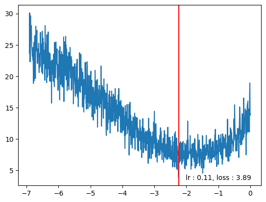

words = open("../data/names.txt", 'r').read().split(); words[:5]
words[:8], len(words)(['emma', 'olivia', 'ava', 'isabella', 'sophia', 'charlotte', 'mia', 'amelia'],
32033)words = open("../data/names.txt", 'r').read().split(); words[:5]
words[:8], len(words)(['emma', 'olivia', 'ava', 'isabella', 'sophia', 'charlotte', 'mia', 'amelia'],
32033)s2i = stoi(words, start_str=".", end_str=".")
i2s = itos(s2i)
display(s2i)
display(i2s){'a': 1,
'b': 2,
'c': 3,
'd': 4,
'e': 5,
'f': 6,
'g': 7,
'h': 8,
'i': 9,
'j': 10,
'k': 11,
'l': 12,
'm': 13,
'n': 14,
'o': 15,
'p': 16,
'q': 17,
'r': 18,
's': 19,
't': 20,
'u': 21,
'v': 22,
'w': 23,
'x': 24,
'y': 25,
'z': 26,
'.': 0}{1: 'a',
2: 'b',
3: 'c',
4: 'd',
5: 'e',
6: 'f',
7: 'g',
8: 'h',
9: 'i',
10: 'j',
11: 'k',
12: 'l',
13: 'm',
14: 'n',
15: 'o',
16: 'p',
17: 'q',
18: 'r',
19: 's',
20: 't',
21: 'u',
22: 'v',
23: 'w',
24: 'x',
25: 'y',
26: 'z',
0: '.'}build_XY (words, s2i, block_size, str_term='.', verbose=False)
def build_XY(words, s2i, block_size, str_term=".", verbose=False):
X, Y = [], []
for w in words:
context = [s2i[str_term]]*block_size # We need numerical embedding for each character 0 is for "."
for ch in w + str_term:
if verbose:
i2s = itos(s2i)
print("".join([i2s[i] for i in context]),"-->", ch)
X.append(context)
Y.append(s2i[ch])
context = context[1:] + [s2i[ch]]
return torch.tensor(X), torch.tensor(Y)X, Y = build_XY(words[:2], s2i, block_size=5, verbose=True)
X, Y..... --> e
....e --> m
...em --> m
..emm --> a
.emma --> .
..... --> o
....o --> l
...ol --> i
..oli --> v
.oliv --> i
olivi --> a
livia --> .(tensor([[ 0, 0, 0, 0, 0],
[ 0, 0, 0, 0, 5],
[ 0, 0, 0, 5, 13],
[ 0, 0, 5, 13, 13],
[ 0, 5, 13, 13, 1],
[ 0, 0, 0, 0, 0],
[ 0, 0, 0, 0, 15],
[ 0, 0, 0, 15, 12],
[ 0, 0, 15, 12, 9],
[ 0, 15, 12, 9, 22],
[15, 12, 9, 22, 9],
[12, 9, 22, 9, 1]]),
tensor([ 5, 13, 13, 1, 0, 15, 12, 9, 22, 9, 1, 0]))X, Y = build_XY(words[:2], s2i, block_size=3, verbose=True)
X, Y... --> e
..e --> m
.em --> m
emm --> a
mma --> .
... --> o
..o --> l
.ol --> i
oli --> v
liv --> i
ivi --> a
via --> .(tensor([[ 0, 0, 0],
[ 0, 0, 5],
[ 0, 5, 13],
[ 5, 13, 13],
[13, 13, 1],
[ 0, 0, 0],
[ 0, 0, 15],
[ 0, 15, 12],
[15, 12, 9],
[12, 9, 22],
[ 9, 22, 9],
[22, 9, 1]]),
tensor([ 5, 13, 13, 1, 0, 15, 12, 9, 22, 9, 1, 0]))X, Y = build_XY(words, s2i, block_size=3)
X.shape, Y.shape(torch.Size([228146, 3]), torch.Size([228146]))X, Y = build_XY(words[:5], s2i, block_size=3, verbose=True)
X.shape, X.dtype, Y.shape, Y.dtype... --> e
..e --> m
.em --> m
emm --> a
mma --> .
... --> o
..o --> l
.ol --> i
oli --> v
liv --> i
ivi --> a
via --> .
... --> a
..a --> v
.av --> a
ava --> .
... --> i
..i --> s
.is --> a
isa --> b
sab --> e
abe --> l
bel --> l
ell --> a
lla --> .
... --> s
..s --> o
.so --> p
sop --> h
oph --> i
phi --> a
hia --> .(torch.Size([32, 3]), torch.int64, torch.Size([32]), torch.int64)C = torch.randn((len(s2i),2), generator=torch.Generator().manual_seed(2147483647)); C.shapetorch.Size([27, 2])C[5]tensor([-0.4713, 0.7868])a = F.one_hot(torch.tensor(5), num_classes=len(s2i))
a.float()@Ctensor([-0.4713, 0.7868])CCNow looking up a value for a character in C is simply looking up an index.
C[5]tensor([-0.4713, 0.7868])We can also do one-hot encoding of our charactar array and then provide one - hot vector and multiply by C which will pluck / lookup right weight for corresponding character
c5 = F.one_hot(torch.tensor(5), num_classes=len(s2i)).float() # One hot vector for 5th character + put input as tensor of float not int or tensor[int]
c5@Ctensor([-0.4713, 0.7868])Above implies we can think of embedding in 2 ways
CCC[5]tensor([-0.4713, 0.7868])C[[5,6,7]]tensor([[-0.4713, 0.7868],
[-0.3284, -0.4330],
[ 1.3729, 2.9334]])C[torch.tensor([5,6,7])]tensor([[-0.4713, 0.7868],
[-0.3284, -0.4330],
[ 1.3729, 2.9334]])C[torch.tensor([5,6,7, 7])]tensor([[-0.4713, 0.7868],
[-0.3284, -0.4330],
[ 1.3729, 2.9334],
[ 1.3729, 2.9334]])display(C[X].shape)
display(C[X][:5])
display(C[X][:5].shape)torch.Size([32, 3, 2])tensor([[[ 1.5674, -0.2373],
[ 1.5674, -0.2373],
[ 1.5674, -0.2373]],
[[ 1.5674, -0.2373],
[ 1.5674, -0.2373],
[-0.4713, 0.7868]],
[[ 1.5674, -0.2373],
[-0.4713, 0.7868],
[ 2.4448, -0.6701]],
[[-0.4713, 0.7868],
[ 2.4448, -0.6701],
[ 2.4448, -0.6701]],
[[ 2.4448, -0.6701],
[ 2.4448, -0.6701],
[-0.0274, -1.1008]]])torch.Size([5, 3, 2])C[X]tensor([[[ 1.5674, -0.2373],
[ 1.5674, -0.2373],
[ 1.5674, -0.2373]],
[[ 1.5674, -0.2373],
[ 1.5674, -0.2373],
[-0.4713, 0.7868]],
[[ 1.5674, -0.2373],
[-0.4713, 0.7868],
[ 2.4448, -0.6701]],
[[-0.4713, 0.7868],
[ 2.4448, -0.6701],
[ 2.4448, -0.6701]],
[[ 2.4448, -0.6701],
[ 2.4448, -0.6701],
[-0.0274, -1.1008]],
[[ 1.5674, -0.2373],
[ 1.5674, -0.2373],
[ 1.5674, -0.2373]],
[[ 1.5674, -0.2373],
[ 1.5674, -0.2373],
[-1.0725, 0.7276]],
[[ 1.5674, -0.2373],
[-1.0725, 0.7276],
[-0.0707, 2.4968]],
[[-1.0725, 0.7276],
[-0.0707, 2.4968],
[ 0.6772, -0.8404]],
[[-0.0707, 2.4968],
[ 0.6772, -0.8404],
[-0.1158, -1.2078]],
[[ 0.6772, -0.8404],
[-0.1158, -1.2078],
[ 0.6772, -0.8404]],
[[-0.1158, -1.2078],
[ 0.6772, -0.8404],
[-0.0274, -1.1008]],
[[ 1.5674, -0.2373],
[ 1.5674, -0.2373],
[ 1.5674, -0.2373]],
[[ 1.5674, -0.2373],
[ 1.5674, -0.2373],
[-0.0274, -1.1008]],
[[ 1.5674, -0.2373],
[-0.0274, -1.1008],
[-0.1158, -1.2078]],
[[-0.0274, -1.1008],
[-0.1158, -1.2078],
[-0.0274, -1.1008]],
[[ 1.5674, -0.2373],
[ 1.5674, -0.2373],
[ 1.5674, -0.2373]],
[[ 1.5674, -0.2373],
[ 1.5674, -0.2373],
[ 0.6772, -0.8404]],
[[ 1.5674, -0.2373],
[ 0.6772, -0.8404],
[ 0.1476, -1.0006]],
[[ 0.6772, -0.8404],
[ 0.1476, -1.0006],
[-0.0274, -1.1008]],
[[ 0.1476, -1.0006],
[-0.0274, -1.1008],
[ 0.2859, -0.0296]],
[[-0.0274, -1.1008],
[ 0.2859, -0.0296],
[-0.4713, 0.7868]],
[[ 0.2859, -0.0296],
[-0.4713, 0.7868],
[-0.0707, 2.4968]],
[[-0.4713, 0.7868],
[-0.0707, 2.4968],
[-0.0707, 2.4968]],
[[-0.0707, 2.4968],
[-0.0707, 2.4968],
[-0.0274, -1.1008]],
[[ 1.5674, -0.2373],
[ 1.5674, -0.2373],
[ 1.5674, -0.2373]],
[[ 1.5674, -0.2373],
[ 1.5674, -0.2373],
[ 0.1476, -1.0006]],
[[ 1.5674, -0.2373],
[ 0.1476, -1.0006],
[-1.0725, 0.7276]],
[[ 0.1476, -1.0006],
[-1.0725, 0.7276],
[ 0.0511, 1.3095]],
[[-1.0725, 0.7276],
[ 0.0511, 1.3095],
[ 1.5618, -1.6261]],
[[ 0.0511, 1.3095],
[ 1.5618, -1.6261],
[ 0.6772, -0.8404]],
[[ 1.5618, -1.6261],
[ 0.6772, -0.8404],
[-0.0274, -1.1008]]])X.shape, C[X].shape(torch.Size([32, 3]), torch.Size([32, 3, 2]))We have a character input of 32 by 3 . For each of them we have gotten an embedding vector
display(X[13,2])
C[X][13, 2]tensor(1)tensor([-0.0274, -1.1008])C[1]tensor([-0.0274, -1.1008])emb = C[X]
emb.shapetorch.Size([32, 3, 2])W2 = torch.randn((100, len(s2i)))
b2 = torch.randn(len(s2i))W2.shape, W2.nelement()(torch.Size([100, 27]), 2700)logits = h@W2+b2; logits.shapetorch.Size([32, 27])counts = logits.exp()prob = counts / counts.sum(1, keepdims=True); prob.shapetorch.Size([32, 27])prob.sum(1)tensor([1.0000, 1.0000, 1.0000, 1.0000, 1.0000, 1.0000, 1.0000, 1.0000, 1.0000,
1.0000, 1.0000, 1.0000, 1.0000, 1.0000, 1.0000, 1.0000, 1.0000, 1.0000,
1.0000, 1.0000, 1.0000, 1.0000, 1.0000, 1.0000, 1.0000, 1.0000, 1.0000,
1.0000, 1.0000, 1.0000, 1.0000, 1.0000])Model (vocab_sz, blck_sz=3, emb_sz=2, hidden_units=100, g=<torch._C.Generator object at 0x7f7709087910>)
Initialize self. See help(type(self)) for accurate signature.
class Model(object):
def __init__(self, vocab_sz, blck_sz=3, emb_sz=2, hidden_units=100, g=torch.Generator().manual_seed(2147483647)) -> None:
self.C = torch.randn((vocab_sz,emb_sz), generator=g, requires_grad=True)
self.W1 = torch.randn((blck_sz*emb_sz, hidden_units), generator=g, requires_grad=True)
self.b1 = torch.randn(hidden_units, generator=g, requires_grad=True)
self.W2 = torch.randn((hidden_units, vocab_sz), generator=g, requires_grad=True)
self.b2 = torch.randn(vocab_sz, generator=g, requires_grad=True)
self.blck_sz = blck_sz
self.emb_sz = emb_sz
self.hidden_units = hidden_units
def __call__(self, X):
emb = self.C[X]
h = torch.tanh(emb.view(-1, emb.shape[1]*emb.shape[2])@self.W1 + self.b1)
logits = h@self.W2 + self.b2
return logits
def parameters(self):
return [self.C, self.W1, self.b1, self.W2, self.b2]
def num_params(self):
return sum(p.nelement() for p in self.parameters())
def zero_grad(self):
for p in self.parameters():
# print(p.shape, p.data, p.grad)
p.grad = NoneF.cross_entropy??Signature:
F.cross_entropy(
input: torch.Tensor,
target: torch.Tensor,
weight: Optional[torch.Tensor] = None,
size_average: Optional[bool] = None,
ignore_index: int = -100,
reduce: Optional[bool] = None,
reduction: str = 'mean',
label_smoothing: float = 0.0,
) -> torch.Tensor
Source:
def cross_entropy(
input: Tensor,
target: Tensor,
weight: Optional[Tensor] = None,
size_average: Optional[bool] = None,
ignore_index: int = -100,
reduce: Optional[bool] = None,
reduction: str = "mean",
label_smoothing: float = 0.0,
) -> Tensor:
r"""This criterion computes the cross entropy loss between input logits and target.
See :class:`~torch.nn.CrossEntropyLoss` for details.
Args:
input (Tensor) : Predicted unnormalized logits;
see Shape section below for supported shapes.
target (Tensor) : Ground truth class indices or class probabilities;
see Shape section below for supported shapes.
weight (Tensor, optional): a manual rescaling weight given to each
class. If given, has to be a Tensor of size `C`
size_average (bool, optional): Deprecated (see :attr:`reduction`). By default,
the losses are averaged over each loss element in the batch. Note that for
some losses, there multiple elements per sample. If the field :attr:`size_average`
is set to ``False``, the losses are instead summed for each minibatch. Ignored
when reduce is ``False``. Default: ``True``
ignore_index (int, optional): Specifies a target value that is ignored
and does not contribute to the input gradient. When :attr:`size_average` is
``True``, the loss is averaged over non-ignored targets. Note that
:attr:`ignore_index` is only applicable when the target contains class indices.
Default: -100
reduce (bool, optional): Deprecated (see :attr:`reduction`). By default, the
losses are averaged or summed over observations for each minibatch depending
on :attr:`size_average`. When :attr:`reduce` is ``False``, returns a loss per
batch element instead and ignores :attr:`size_average`. Default: ``True``
reduction (str, optional): Specifies the reduction to apply to the output:
``'none'`` | ``'mean'`` | ``'sum'``. ``'none'``: no reduction will be applied,
``'mean'``: the sum of the output will be divided by the number of
elements in the output, ``'sum'``: the output will be summed. Note: :attr:`size_average`
and :attr:`reduce` are in the process of being deprecated, and in the meantime,
specifying either of those two args will override :attr:`reduction`. Default: ``'mean'``
label_smoothing (float, optional): A float in [0.0, 1.0]. Specifies the amount
of smoothing when computing the loss, where 0.0 means no smoothing. The targets
become a mixture of the original ground truth and a uniform distribution as described in
`Rethinking the Inception Architecture for Computer Vision <https://arxiv.org/abs/1512.00567>`__. Default: :math:`0.0`.
Shape:
- Input: Shape :math:`(C)`, :math:`(N, C)` or :math:`(N, C, d_1, d_2, ..., d_K)` with :math:`K \geq 1`
in the case of `K`-dimensional loss.
- Target: If containing class indices, shape :math:`()`, :math:`(N)` or :math:`(N, d_1, d_2, ..., d_K)` with
:math:`K \geq 1` in the case of K-dimensional loss where each value should be between :math:`[0, C)`.
If containing class probabilities, same shape as the input and each value should be between :math:`[0, 1]`.
where:
.. math::
\begin{aligned}
C ={} & \text{number of classes} \\
N ={} & \text{batch size} \\
\end{aligned}
Examples::
>>> # Example of target with class indices
>>> input = torch.randn(3, 5, requires_grad=True)
>>> target = torch.randint(5, (3,), dtype=torch.int64)
>>> loss = F.cross_entropy(input, target)
>>> loss.backward()
>>>
>>> # Example of target with class probabilities
>>> input = torch.randn(3, 5, requires_grad=True)
>>> target = torch.randn(3, 5).softmax(dim=1)
>>> loss = F.cross_entropy(input, target)
>>> loss.backward()
"""
if has_torch_function_variadic(input, target, weight):
return handle_torch_function(
cross_entropy,
(input, target, weight),
input,
target,
weight=weight,
size_average=size_average,
ignore_index=ignore_index,
reduce=reduce,
reduction=reduction,
label_smoothing=label_smoothing,
)
if size_average is not None or reduce is not None:
reduction = _Reduction.legacy_get_string(size_average, reduce)
return torch._C._nn.cross_entropy_loss(input, target, weight, _Reduction.get_enum(reduction), ignore_index, label_smoothing)
File: /opt/homebrew/Caskroom/miniforge/base/envs/aiking/lib/python3.9/site-packages/torch/nn/functional.py
Type: functionsoftmax (inputs, dim=1)
def softmax(inputs, dim=1):
c = -torch.max(inputs)
counts = (inputs+c).exp()
probs = counts/ counts.sum(dim=dim, keepdim=True)
return probsinputs = torch.tensor([[-1, 0, 1]]).float()
softmax(inputs)tensor([[0.0900, 0.2447, 0.6652]])inputs.shapetorch.Size([1, 3])F.softmax(inputs, dim=1)tensor([[0.0900, 0.2447, 0.6652]])nll (inputs, target)
| Details | |
|---|---|
| inputs | Takes logits |
| target | Takes y |
def nll(inputs, #Takes logits
target #Takes y
):
# counts = inputs.exp()
# c = -torch.max(inputs)
# counts = (inputs+c).exp()
# probs = counts/ counts.sum(dim=1, keepdim=True)
probs = softmax(inputs, dim=1)
loss = -probs[torch.arange(len(target)), target].log().mean()
return lossX, Y = build_XY(words[:5], s2i, block_size=3); X.shape, Y.shape
lr = 0.01
model = Model(len(s2i))
# Forward Pass
logits = model(X); logits.shape
# loss = nll(logits, Y)
loss = F.cross_entropy(logits, Y)
loss2 = nll(logits, Y)
# Backward Pass
model.zero_grad()
loss.backward(); loss, loss2
# # Update
# for p in model.parameters():
# p.data -= lr*p.grad
# model.parameters()[0].grad
# model.parameters()[1].grad
# len(model.parameters())
for p in model.parameters():
p.data -=lr*p.grad# torch.randint()
display(X.shape)
torch.randint(low=0, high=10, size=(3,))torch.Size([32, 3])tensor([0, 6, 8])batch_size = 32
ix = torch.randint(low=0, high=X.shape[0], size=(batch_size,))
X[ix].shapetorch.Size([32, 3])a = model.C.detach().numpy(); a.shape(27, 2)plt.scatter(a[:,0], a[:,1])plot_embeddings (model, s2i, emb_model=None, cluster_model=None)
def plot_embeddings(model, s2i, emb_model=None, cluster_model = None):
i2s = itos(s2i)
plt.figure(figsize=(8,8))
c = model.C.detach().numpy()
if not emb_model: a = c
else: a = emb_model.fit_transform(c)
if not cluster_model: plt.scatter(a[:,0], a[:,1], s=200)
else:
label = cluster_model.fit_predict(c)
plt.scatter(a[:,0], a[:,1], s=200, c=label)
for i in range(a.shape[0]):
# plt.text()
plt.text(a[i,0], a[i,1], i2s[i], ha='center', va='center', color='white')
plt.grid()model = Model(len(s2i))
plot_embeddings(model, s2i)model = Model(len(s2i))
plot_embeddings(model, s2i, cluster_model=KMeans(n_clusters=3))/opt/homebrew/Caskroom/miniforge/base/envs/aiking/lib/python3.9/site-packages/sklearn/cluster/_kmeans.py:1412: FutureWarning: The default value of `n_init` will change from 10 to 'auto' in 1.4. Set the value of `n_init` explicitly to suppress the warning
super()._check_params_vs_input(X, default_n_init=10)train (model, X, Y, lr=0.1, epochs=1000, verbose=False, batch_sz=None, loss_fn=<function cross_entropy>, tracker=None)
def train(model, X, Y, lr=0.1, epochs=1000, verbose=False, batch_sz=None, loss_fn=F.cross_entropy, tracker = None):
for i in range(epochs):
#minibatch construct
inputs = X
target = Y
if batch_sz:
ix = torch.randint(low=0, high=X.shape[0], size=(batch_sz,))
inputs = X[ix]
target = Y[ix]
# Forward Pass
logits = model(inputs); logits.shape
# loss = nll(logits, Y)
loss = loss_fn(logits, target)
# loss2 = nll(logits, Y)
# Backward Pass
model.zero_grad()
loss.backward();
if i%100 == 0 and verbose: print(i, loss)
if i == epochs-1: print(i, loss)
## Update / Gradient
lri = next(lr).item() if hasattr(lr, "__next__") else lr
for p in model.parameters():
p.data -=lri*p.grad
if tracker is not None:
tracker.get('lr', []).append(lri)
tracker.get('loss', []).append(loss.item())
tracker.get('batch_sz', []).append(batch_sz)
tracker.get('block_sz', []).append(X.shape[1])
tracker.get('emb_sz', []).append(model.C.shape[1])
tracker.get('hidden_units', []).append(model.hidden_units)
return modelX.shape[1]3X, Y = build_XY(words, s2i, block_size=3); X.shape, Y.shape
model = Model(len(s2i))plot_embeddings(model, s2i)
tracker = {'lr':[], 'batch_sz':[], 'loss':[], 'block_sz':[], 'emb_sz':[], 'hidden_units':[] }model = train(model, X, Y, epochs=400, verbose=True, tracker=tracker, batch_sz=None)0 tensor(16.1822, grad_fn=<NllLossBackward0>)
100 tensor(3.1182, grad_fn=<NllLossBackward0>)
200 tensor(2.7789, grad_fn=<NllLossBackward0>)
300 tensor(2.6775, grad_fn=<NllLossBackward0>)
399 tensor(2.6257, grad_fn=<NllLossBackward0>)tracker is not NoneTruetracker.keys()dict_keys(['lr', 'batch_sz', 'loss', 'block_sz', 'emb_sz', 'hidden_units'])plt.plot(tracker['loss'])plot_embeddings(model, s2i)
X, Y = build_XY(words, s2i, block_size=3); X.shape, Y.shape
model = Model(len(s2i))
plot_embeddings(model, s2i)
tracker = {'lr':[], 'batch_sz':[], 'loss':[], 'block_sz':[], 'emb_sz':[], 'hidden_units':[] }model = train(model, X, Y, epochs=2000, verbose=True, tracker=tracker, batch_sz=32); model0 tensor(17.3736, grad_fn=<NllLossBackward0>)
100 tensor(3.5120, grad_fn=<NllLossBackward0>)
200 tensor(3.2923, grad_fn=<NllLossBackward0>)
300 tensor(2.5880, grad_fn=<NllLossBackward0>)
400 tensor(2.7083, grad_fn=<NllLossBackward0>)
500 tensor(2.8158, grad_fn=<NllLossBackward0>)
600 tensor(2.8590, grad_fn=<NllLossBackward0>)
700 tensor(2.7595, grad_fn=<NllLossBackward0>)
800 tensor(2.6768, grad_fn=<NllLossBackward0>)
900 tensor(2.9124, grad_fn=<NllLossBackward0>)
1000 tensor(2.6611, grad_fn=<NllLossBackward0>)
1100 tensor(2.2173, grad_fn=<NllLossBackward0>)
1200 tensor(2.2574, grad_fn=<NllLossBackward0>)
1300 tensor(2.3949, grad_fn=<NllLossBackward0>)
1400 tensor(2.7110, grad_fn=<NllLossBackward0>)
1500 tensor(2.9206, grad_fn=<NllLossBackward0>)
1600 tensor(2.5418, grad_fn=<NllLossBackward0>)
1700 tensor(2.5544, grad_fn=<NllLossBackward0>)
1800 tensor(2.8429, grad_fn=<NllLossBackward0>)
1900 tensor(2.2609, grad_fn=<NllLossBackward0>)
1999 tensor(2.5404, grad_fn=<NllLossBackward0>)<__main__.Model>model.num_params() # Number of parameter in the model3481plt.plot(tracker['loss'])plot_embeddings(model, s2i)
# X[ix]
ix = 0
# model.C[X[ix]]
X[ix]
# model(torch.tensor([0,0,0]))
emb = model.C[torch.tensor([0,0,0])]
# emb.shape[0], emb.shape[1], emb.shape[2]
emb.shapetorch.Size([3, 2])X[ix]
X.shapetorch.Size([228146, 3])ix = 0
g=torch.Generator().manual_seed(2147483647)
n_samples = 20
gen_words = []for i in range(n_samples):
ix = 0
gen_word = ""
inp = [ix]*model.blck_sz
while True:
logits = model(torch.tensor([inp]))
counts = logits.exp() # equivalent N
probs = counts/ counts.sum(1, keepdims=True)
ix = torch.multinomial(probs, num_samples=1, replacement=True, generator=g).item()
inp.pop(0)
inp.append(ix)
if ix == 0: break
else: gen_word +=i2s[ix]
gen_words.append(gen_word)
# probs
ix0F<module 'torch.nn.functional' from '/opt/homebrew/Caskroom/miniforge/base/envs/aiking/lib/python3.9/site-packages/torch/nn/functional.py'>inp, words([18, 21, 0],
['emma',
'olivia',
'ava',
'isabella',
'sophia',
'charlotte',
'mia',
'amelia',
'harper',
'evelyn',
'abigail',
'emily',
'elizabeth',
'mila',
'ella',
'avery',
'sofia',
'camila',
'aria',
'scarlett',
'victoria',
'madison',
'luna',
'grace',
'chloe',
'penelope',
'layla',
'riley',
'zoey',
'nora',
'lily',
'eleanor',
'hannah',
'lillian',
'addison',
'aubrey',
'ellie',
'stella',
'natalie',
'zoe',
'leah',
'hazel',
'violet',
'aurora',
'savannah',
'audrey',
'brooklyn',
'bella',
'claire',
'skylar',
'lucy',
'paisley',
'everly',
'anna',
'caroline',
'nova',
'genesis',
'emilia',
'kennedy',
'samantha',
'maya',
'willow',
'kinsley',
'naomi',
'aaliyah',
'elena',
'sarah',
'ariana',
'allison',
'gabriella',
'alice',
'madelyn',
'cora',
'ruby',
'eva',
'serenity',
'autumn',
'adeline',
'hailey',
'gianna',
'valentina',
'isla',
'eliana',
'quinn',
'nevaeh',
'ivy',
'sadie',
'piper',
'lydia',
'alexa',
'josephine',
'emery',
'julia',
'delilah',
'arianna',
'vivian',
'kaylee',
'sophie',
'brielle',
'madeline',
'peyton',
'rylee',
'clara',
'hadley',
'melanie',
'mackenzie',
'reagan',
'adalynn',
'liliana',
'aubree',
'jade',
'katherine',
'isabelle',
'natalia',
'raelynn',
'maria',
'athena',
'ximena',
'arya',
'leilani',
'taylor',
'faith',
'rose',
'kylie',
'alexandra',
'mary',
'margaret',
'lyla',
'ashley',
'amaya',
'eliza',
'brianna',
'bailey',
'andrea',
'khloe',
'jasmine',
'melody',
'iris',
'isabel',
'norah',
'annabelle',
'valeria',
'emerson',
'adalyn',
'ryleigh',
'eden',
'emersyn',
'anastasia',
'kayla',
'alyssa',
'juliana',
'charlie',
'esther',
'ariel',
'cecilia',
'valerie',
'alina',
'molly',
'reese',
'aliyah',
'lilly',
'parker',
'finley',
'morgan',
'sydney',
'jordyn',
'eloise',
'trinity',
'daisy',
'kimberly',
'lauren',
'genevieve',
'sara',
'arabella',
'harmony',
'elise',
'remi',
'teagan',
'alexis',
'london',
'sloane',
'laila',
'lucia',
'diana',
'juliette',
'sienna',
'elliana',
'londyn',
'ayla',
'callie',
'gracie',
'josie',
'amara',
'jocelyn',
'daniela',
'everleigh',
'mya',
'rachel',
'summer',
'alana',
'brooke',
'alaina',
'mckenzie',
'catherine',
'amy',
'presley',
'journee',
'rosalie',
'ember',
'brynlee',
'rowan',
'joanna',
'paige',
'rebecca',
'ana',
'sawyer',
'mariah',
'nicole',
'brooklynn',
'payton',
'marley',
'fiona',
'georgia',
'lila',
'harley',
'adelyn',
'alivia',
'noelle',
'gemma',
'vanessa',
'journey',
'makayla',
'angelina',
'adaline',
'catalina',
'alayna',
'julianna',
'leila',
'lola',
'adriana',
'june',
'juliet',
'jayla',
'river',
'tessa',
'lia',
'dakota',
'delaney',
'selena',
'blakely',
'ada',
'camille',
'zara',
'malia',
'hope',
'samara',
'vera',
'mckenna',
'briella',
'izabella',
'hayden',
'raegan',
'michelle',
'angela',
'ruth',
'freya',
'kamila',
'vivienne',
'aspen',
'olive',
'kendall',
'elaina',
'thea',
'kali',
'destiny',
'amiyah',
'evangeline',
'cali',
'blake',
'elsie',
'juniper',
'alexandria',
'myla',
'ariella',
'kate',
'mariana',
'lilah',
'charlee',
'daleyza',
'nyla',
'jane',
'maggie',
'zuri',
'aniyah',
'lucille',
'leia',
'melissa',
'adelaide',
'amina',
'giselle',
'lena',
'camilla',
'miriam',
'millie',
'brynn',
'gabrielle',
'sage',
'annie',
'logan',
'lilliana',
'haven',
'jessica',
'kaia',
'magnolia',
'amira',
'adelynn',
'makenzie',
'stephanie',
'nina',
'phoebe',
'arielle',
'evie',
'lyric',
'alessandra',
'gabriela',
'paislee',
'raelyn',
'madilyn',
'paris',
'makenna',
'kinley',
'gracelyn',
'talia',
'maeve',
'rylie',
'kiara',
'evelynn',
'brinley',
'jacqueline',
'laura',
'gracelynn',
'lexi',
'ariah',
'fatima',
'jennifer',
'kehlani',
'alani',
'ariyah',
'luciana',
'allie',
'heidi',
'maci',
'phoenix',
'felicity',
'joy',
'kenzie',
'veronica',
'margot',
'addilyn',
'lana',
'cassidy',
'remington',
'saylor',
'ryan',
'keira',
'harlow',
'miranda',
'angel',
'amanda',
'daniella',
'royalty',
'gwendolyn',
'ophelia',
'heaven',
'jordan',
'madeleine',
'esmeralda',
'kira',
'miracle',
'elle',
'amari',
'danielle',
'daphne',
'willa',
'haley',
'gia',
'kaitlyn',
'oakley',
'kailani',
'winter',
'alicia',
'serena',
'nadia',
'aviana',
'demi',
'jada',
'braelynn',
'dylan',
'ainsley',
'alison',
'camryn',
'avianna',
'bianca',
'skyler',
'scarlet',
'maddison',
'nylah',
'sarai',
'regina',
'dahlia',
'nayeli',
'raven',
'helen',
'adrianna',
'averie',
'skye',
'kelsey',
'tatum',
'kensley',
'maliyah',
'erin',
'viviana',
'jenna',
'anaya',
'carolina',
'shelby',
'sabrina',
'mikayla',
'annalise',
'octavia',
'lennon',
'blair',
'carmen',
'yaretzi',
'kennedi',
'mabel',
'zariah',
'kyla',
'christina',
'selah',
'celeste',
'eve',
'mckinley',
'milani',
'frances',
'jimena',
'kylee',
'leighton',
'katie',
'aitana',
'kayleigh',
'sierra',
'kathryn',
'rosemary',
'jolene',
'alondra',
'elisa',
'helena',
'charleigh',
'hallie',
'lainey',
'avah',
'jazlyn',
'kamryn',
'mira',
'cheyenne',
'francesca',
'antonella',
'wren',
'chelsea',
'amber',
'emory',
'lorelei',
'nia',
'abby',
'april',
'emelia',
'carter',
'aylin',
'cataleya',
'bethany',
'marlee',
'carly',
'kaylani',
'emely',
'liana',
'madelynn',
'cadence',
'matilda',
'sylvia',
'myra',
'fernanda',
'oaklyn',
'elianna',
'hattie',
'dayana',
'kendra',
'maisie',
'malaysia',
'kara',
'katelyn',
'maia',
'celine',
'cameron',
'renata',
'jayleen',
'charli',
'emmalyn',
'holly',
'azalea',
'leona',
'alejandra',
'bristol',
'collins',
'imani',
'meadow',
'alexia',
'edith',
'kaydence',
'leslie',
'lilith',
'kora',
'aisha',
'meredith',
'danna',
'wynter',
'emberly',
'julieta',
'michaela',
'alayah',
'jemma',
'reign',
'colette',
'kaliyah',
'elliott',
'johanna',
'remy',
'sutton',
'emmy',
'virginia',
'briana',
'oaklynn',
'adelina',
'everlee',
'megan',
'angelica',
'justice',
'mariam',
'khaleesi',
'macie',
'karsyn',
'alanna',
'aleah',
'mae',
'mallory',
'esme',
'skyla',
'madilynn',
'charley',
'allyson',
'hanna',
'shiloh',
'henley',
'macy',
'maryam',
'ivanna',
'ashlynn',
'lorelai',
'amora',
'ashlyn',
'sasha',
'baylee',
'beatrice',
'itzel',
'priscilla',
'marie',
'jayda',
'liberty',
'rory',
'alessia',
'alaia',
'janelle',
'kalani',
'gloria',
'sloan',
'dorothy',
'greta',
'julie',
'zahra',
'savanna',
'annabella',
'poppy',
'amalia',
'zaylee',
'cecelia',
'coraline',
'kimber',
'emmie',
'anne',
'karina',
'kassidy',
'kynlee',
'monroe',
'anahi',
'jaliyah',
'jazmin',
'maren',
'monica',
'siena',
'marilyn',
'reyna',
'kyra',
'lilian',
'jamie',
'melany',
'alaya',
'ariya',
'kelly',
'rosie',
'adley',
'dream',
'jaylah',
'laurel',
'jazmine',
'mina',
'karla',
'bailee',
'aubrie',
'katalina',
'melina',
'harlee',
'elliot',
'hayley',
'elaine',
'karen',
'dallas',
'irene',
'lylah',
'ivory',
'chaya',
'rosa',
'aleena',
'braelyn',
'nola',
'alma',
'leyla',
'pearl',
'addyson',
'roselyn',
'lacey',
'lennox',
'reina',
'aurelia',
'noa',
'janiyah',
'jessie',
'madisyn',
'saige',
'alia',
'tiana',
'astrid',
'cassandra',
'kyleigh',
'romina',
'stevie',
'haylee',
'zelda',
'lillie',
'aileen',
'brylee',
'eileen',
'yara',
'ensley',
'lauryn',
'giuliana',
'livia',
'anya',
'mikaela',
'palmer',
'lyra',
'mara',
'marina',
'kailey',
'liv',
'clementine',
'kenna',
'briar',
'emerie',
'galilea',
'tiffany',
'bonnie',
'elyse',
'cynthia',
'frida',
'kinslee',
'tatiana',
'joelle',
'armani',
'jolie',
'nalani',
'rayna',
'yareli',
'meghan',
'rebekah',
'addilynn',
'faye',
'zariyah',
'lea',
'aliza',
'julissa',
'lilyana',
'anika',
'kairi',
'aniya',
'noemi',
'angie',
'crystal',
'bridget',
'ari',
'davina',
'amelie',
'amirah',
'annika',
'elora',
'xiomara',
'linda',
'hana',
'laney',
'mercy',
'hadassah',
'madalyn',
'louisa',
'simone',
'kori',
'jillian',
'alena',
'malaya',
'miley',
'milan',
'sariyah',
'malani',
'clarissa',
'nala',
'princess',
'amani',
'analia',
'estella',
'milana',
'aya',
'chana',
'jayde',
'tenley',
'zaria',
'itzayana',
'penny',
'ailani',
'lara',
'aubriella',
'clare',
'lina',
'rhea',
'bria',
'thalia',
'keyla',
'haisley',
'ryann',
'addisyn',
'amaia',
'chanel',
'ellen',
'harmoni',
'aliana',
'tinsley',
'landry',
'paisleigh',
'lexie',
'myah',
'rylan',
'deborah',
'emilee',
'laylah',
'novalee',
'ellis',
'emmeline',
'avalynn',
'hadlee',
'legacy',
'braylee',
'elisabeth',
'kaylie',
'ansley',
'dior',
'paula',
'belen',
'corinne',
'maleah',
'martha',
'teresa',
'salma',
'louise',
'averi',
'lilianna',
'amiya',
'milena',
'royal',
'aubrielle',
'calliope',
'frankie',
'natasha',
'kamilah',
'meilani',
'raina',
'amayah',
'lailah',
'rayne',
'zaniyah',
'isabela',
'nathalie',
'miah',
'opal',
'kenia',
'azariah',
'hunter',
'tori',
'andi',
'keily',
'leanna',
'scarlette',
'jaelyn',
'saoirse',
'selene',
'dalary',
'lindsey',
'marianna',
'ramona',
'estelle',
'giovanna',
'holland',
'nancy',
'emmalynn',
'mylah',
'rosalee',
'sariah',
'zoie',
'blaire',
'lyanna',
'maxine',
'anais',
'dana',
'judith',
'kiera',
'jaelynn',
'noor',
'kai',
'adalee',
'oaklee',
'amaris',
'jaycee',
'belle',
'carolyn',
'della',
'karter',
'sky',
'treasure',
'vienna',
'jewel',
'rivka',
'rosalyn',
'alannah',
'ellianna',
'sunny',
'claudia',
'cara',
'hailee',
'estrella',
'harleigh',
'zhavia',
'alianna',
'brittany',
'jaylene',
'journi',
'marissa',
'mavis',
'iliana',
'jurnee',
'aislinn',
'alyson',
'elsa',
'kamiyah',
'kiana',
'lisa',
'arlette',
'kadence',
'kathleen',
'halle',
'erika',
'sylvie',
'adele',
'erica',
'veda',
'whitney',
'bexley',
'emmaline',
'guadalupe',
'august',
'brynleigh',
'gwen',
'promise',
'alisson',
'india',
'madalynn',
'paloma',
'patricia',
'samira',
'aliya',
'casey',
'jazlynn',
'paulina',
'dulce',
'kallie',
'perla',
'adrienne',
'alora',
'nataly',
'ayleen',
'christine',
'kaiya',
'ariadne',
'karlee',
'barbara',
'lillianna',
'raquel',
'saniyah',
'yamileth',
'arely',
'celia',
'heavenly',
'kaylin',
'marisol',
'marleigh',
'avalyn',
'berkley',
'kataleya',
'zainab',
'dani',
'egypt',
'joyce',
'kenley',
'annabel',
'kaelyn',
'etta',
'hadleigh',
'joselyn',
'luella',
'jaylee',
'zola',
'alisha',
'ezra',
'queen',
'amia',
'annalee',
'bellamy',
'paola',
'tinley',
'violeta',
'jenesis',
'arden',
'giana',
'wendy',
'ellison',
'florence',
'margo',
'naya',
'robin',
'sandra',
'scout',
'waverly',
'janessa',
'jayden',
'micah',
'novah',
'zora',
'ann',
'jana',
'taliyah',
'vada',
'giavanna',
'ingrid',
'valery',
'azaria',
'emmarie',
'esperanza',
'kailyn',
'aiyana',
'keilani',
'austyn',
'whitley',
'elina',
'kimora',
'maliah',
...])gen_word_nn (model, i2s, n_samples=20, g=<torch._C.Generator object at 0x7f7708e21010>, logit2prob=<function softmax>)
def gen_word_nn(model, i2s, n_samples=20, g=torch.Generator().manual_seed(2147483647), logit2prob=F.softmax):
gen_words = []
for i in range(n_samples):
ix = 0
gen_word = ""
inp = [ix]*model.blck_sz
while True:
logits = model(torch.tensor([inp]))
# counts = logits.exp() # equivalent N
# probs = counts/ counts.sum(1, keepdims=True)
probs = logit2prob(logits, dim=1)
ix = torch.multinomial(probs, num_samples=1, replacement=True, generator=g).item()
inp.pop(0)
inp.append(ix)
if ix == 0: break
else: gen_word +=i2s[ix]
gen_words.append(gen_word)
return gen_wordsgen_word_nn(model, i2s)['tex',
'maloallurarlen',
'tynn',
'ralimittarnrllayn',
'kanda',
'raciynu',
'jarhrygotei',
'molielltiu',
'jerteda',
'kareynm',
'sadlu',
'nkaviyn',
'rytlsp',
'hulinnnvtarlysu',
'jsdr',
'ban',
'jlhpynw',
'iranl',
'raldynleez',
'myderu']Typical steps in learning rate optimization may include
lr where loss doesn’t change much and higher limit where loss completely explodeslr ( We should continue to do it till learning rate keeps decreasing signficantly)lr by a factor of 10 and continue to train further to get most optimized learning rate.X, Y = build_XY(words, s2i, block_size=3); X.shape, Y.shape
model = Model(len(s2i))
plot_embeddings(model, s2i)
F.cross_entropy(model(X), Y) # Initial loss without any optimizationtensor(15.4238, grad_fn=<NllLossBackward0>)train(model, X, Y, lr=0.0001, epochs=1000, batch_sz=32, verbose=True)0 tensor(18.4698, grad_fn=<NllLossBackward0>)
100 tensor(17.9110, grad_fn=<NllLossBackward0>)
200 tensor(16.4214, grad_fn=<NllLossBackward0>)
300 tensor(14.0824, grad_fn=<NllLossBackward0>)
400 tensor(13.0391, grad_fn=<NllLossBackward0>)
500 tensor(16.9305, grad_fn=<NllLossBackward0>)
600 tensor(16.5712, grad_fn=<NllLossBackward0>)
700 tensor(15.7921, grad_fn=<NllLossBackward0>)
800 tensor(12.6845, grad_fn=<NllLossBackward0>)
900 tensor(12.2210, grad_fn=<NllLossBackward0>)
999 tensor(17.0267, grad_fn=<NllLossBackward0>)<__main__.Model>train(model, X, Y, lr=1, epochs=1000, batch_sz=32, verbose=True)0 tensor(13.1564, grad_fn=<NllLossBackward0>)
100 tensor(8.6120, grad_fn=<NllLossBackward0>)
200 tensor(4.7459, grad_fn=<NllLossBackward0>)
300 tensor(5.8324, grad_fn=<NllLossBackward0>)
400 tensor(5.4408, grad_fn=<NllLossBackward0>)
500 tensor(5.1435, grad_fn=<NllLossBackward0>)
600 tensor(4.8215, grad_fn=<NllLossBackward0>)
700 tensor(4.8802, grad_fn=<NllLossBackward0>)
800 tensor(3.4567, grad_fn=<NllLossBackward0>)
900 tensor(3.2230, grad_fn=<NllLossBackward0>)
999 tensor(3.2829, grad_fn=<NllLossBackward0>)<__main__.Model>train(model, X, Y, lr=10, epochs=1000, batch_sz=32, verbose=True)0 tensor(2.8849, grad_fn=<NllLossBackward0>)
100 tensor(83.2786, grad_fn=<NllLossBackward0>)
200 tensor(93.7002, grad_fn=<NllLossBackward0>)
300 tensor(60.7121, grad_fn=<NllLossBackward0>)
400 tensor(34.8946, grad_fn=<NllLossBackward0>)
500 tensor(79.4215, grad_fn=<NllLossBackward0>)
600 tensor(34.4919, grad_fn=<NllLossBackward0>)
700 tensor(54.7734, grad_fn=<NllLossBackward0>)
800 tensor(58.9727, grad_fn=<NllLossBackward0>)
900 tensor(54.2846, grad_fn=<NllLossBackward0>)
999 tensor(76.2547, grad_fn=<NllLossBackward0>)<__main__.Model>This indicates learning rate should be choosen between 0 and 1
lr_scheduler (low=-3, upper=0, steps=1000)
def lr_scheduler(low=-3, upper=0, steps=1000):
yield from 10**torch.linspace(low, upper, steps)
# for i in lr_scheduler():
# print(i)
# break
# torch.linspace(-3, 0, 1000)
# for i in torch.pow(10, torch.linspace(-3, 0, 1000)):
# print(i)
# for i in torch.pow(10, torch.linspace(-3, 0, 1000)):
# print(i.item())hasattr( lr_scheduler(), "__next__")Truenext(lr_scheduler())tensor(0.0010)tracker = {'lr':[], 'batch_sz':[], 'loss':[], 'block_sz':[], 'emb_sz':[], 'hidden_units':[] }
model = Model(len(s2i))
plot_embeddings(model, s2i); F.cross_entropy(model(X), Y)tensor(19.4207, grad_fn=<NllLossBackward0>)train(model, X, Y, lr=lr_scheduler(steps=1000), epochs=1000, batch_sz=32, verbose=True, tracker=tracker)0 tensor(20.5248, grad_fn=<NllLossBackward0>)
100 tensor(17.5990, grad_fn=<NllLossBackward0>)
200 tensor(13.2811, grad_fn=<NllLossBackward0>)
300 tensor(7.4093, grad_fn=<NllLossBackward0>)
400 tensor(6.2343, grad_fn=<NllLossBackward0>)
500 tensor(3.3622, grad_fn=<NllLossBackward0>)
600 tensor(3.9428, grad_fn=<NllLossBackward0>)
700 tensor(3.1582, grad_fn=<NllLossBackward0>)
800 tensor(3.4537, grad_fn=<NllLossBackward0>)
900 tensor(6.5724, grad_fn=<NllLossBackward0>)
999 tensor(7.3060, grad_fn=<NllLossBackward0>)<__main__.Model>plt.plot(tracker['lr'], tracker['loss'])
# tracker['lr']min_idx = torch.tensor(tracker['loss']).min(dim=0).indices.item()
tracker['lr'][min_idx]0.04804869741201401lrs = torch.tensor(tracker['lr'])
losses = torch.tensor(tracker['loss'])
log_lrs = lrs.log()
log_lrs[min_idx], lrs[min_idx](tensor(-3.0355), tensor(0.0480))plt.plot(log_lrs, tracker['loss'])
plt.axvline(log_lrs[min_idx], color='r')
plt.text(log_lrs[min_idx]*0.9,losses[min_idx]*0.9, f"lr : {lrs[min_idx].item():0.2f}, loss : {losses[min_idx].item():0.2f}")Text(tensor(-2.7320), tensor(2.1892), 'lr : 0.05, loss : 2.43')
train(model, X, Y, lr=0.05, epochs=10000, batch_sz=32, verbose=True, tracker=tracker)0 tensor(7.7239, grad_fn=<NllLossBackward0>)
100 tensor(3.4564, grad_fn=<NllLossBackward0>)
200 tensor(2.3491, grad_fn=<NllLossBackward0>)
300 tensor(2.6205, grad_fn=<NllLossBackward0>)
400 tensor(3.1440, grad_fn=<NllLossBackward0>)
500 tensor(2.7919, grad_fn=<NllLossBackward0>)
600 tensor(2.4809, grad_fn=<NllLossBackward0>)
700 tensor(2.8206, grad_fn=<NllLossBackward0>)
800 tensor(2.6108, grad_fn=<NllLossBackward0>)
900 tensor(2.8789, grad_fn=<NllLossBackward0>)
1000 tensor(2.2781, grad_fn=<NllLossBackward0>)
1100 tensor(2.3718, grad_fn=<NllLossBackward0>)
1200 tensor(3.1925, grad_fn=<NllLossBackward0>)
1300 tensor(2.6590, grad_fn=<NllLossBackward0>)
1400 tensor(2.4634, grad_fn=<NllLossBackward0>)
1500 tensor(2.5142, grad_fn=<NllLossBackward0>)
1600 tensor(2.6078, grad_fn=<NllLossBackward0>)
1700 tensor(2.4267, grad_fn=<NllLossBackward0>)
1800 tensor(2.3398, grad_fn=<NllLossBackward0>)
1900 tensor(2.1698, grad_fn=<NllLossBackward0>)
2000 tensor(2.4727, grad_fn=<NllLossBackward0>)
2100 tensor(2.6651, grad_fn=<NllLossBackward0>)
2200 tensor(2.8141, grad_fn=<NllLossBackward0>)
2300 tensor(2.6341, grad_fn=<NllLossBackward0>)
2400 tensor(2.4364, grad_fn=<NllLossBackward0>)
2500 tensor(2.5922, grad_fn=<NllLossBackward0>)
2600 tensor(2.5449, grad_fn=<NllLossBackward0>)
2700 tensor(2.6220, grad_fn=<NllLossBackward0>)
2800 tensor(2.1987, grad_fn=<NllLossBackward0>)
2900 tensor(2.3869, grad_fn=<NllLossBackward0>)
3000 tensor(2.3194, grad_fn=<NllLossBackward0>)
3100 tensor(2.1561, grad_fn=<NllLossBackward0>)
3200 tensor(2.2904, grad_fn=<NllLossBackward0>)
3300 tensor(2.7685, grad_fn=<NllLossBackward0>)
3400 tensor(2.4733, grad_fn=<NllLossBackward0>)
3500 tensor(2.3755, grad_fn=<NllLossBackward0>)
3600 tensor(2.3150, grad_fn=<NllLossBackward0>)
3700 tensor(2.2893, grad_fn=<NllLossBackward0>)
3800 tensor(2.1896, grad_fn=<NllLossBackward0>)
3900 tensor(2.6078, grad_fn=<NllLossBackward0>)
4000 tensor(2.6497, grad_fn=<NllLossBackward0>)
4100 tensor(2.3783, grad_fn=<NllLossBackward0>)
4200 tensor(2.6059, grad_fn=<NllLossBackward0>)
4300 tensor(2.0487, grad_fn=<NllLossBackward0>)
4400 tensor(2.2884, grad_fn=<NllLossBackward0>)
4500 tensor(2.7715, grad_fn=<NllLossBackward0>)
4600 tensor(2.6611, grad_fn=<NllLossBackward0>)
4700 tensor(2.3218, grad_fn=<NllLossBackward0>)
4800 tensor(2.7876, grad_fn=<NllLossBackward0>)
4900 tensor(2.3589, grad_fn=<NllLossBackward0>)
5000 tensor(2.4277, grad_fn=<NllLossBackward0>)
5100 tensor(2.4410, grad_fn=<NllLossBackward0>)
5200 tensor(2.6355, grad_fn=<NllLossBackward0>)
5300 tensor(2.5415, grad_fn=<NllLossBackward0>)
5400 tensor(2.3694, grad_fn=<NllLossBackward0>)
5500 tensor(2.1534, grad_fn=<NllLossBackward0>)
5600 tensor(2.2819, grad_fn=<NllLossBackward0>)
5700 tensor(2.8102, grad_fn=<NllLossBackward0>)
5800 tensor(2.1185, grad_fn=<NllLossBackward0>)
5900 tensor(2.7238, grad_fn=<NllLossBackward0>)
6000 tensor(2.4982, grad_fn=<NllLossBackward0>)
6100 tensor(2.3530, grad_fn=<NllLossBackward0>)
6200 tensor(2.7606, grad_fn=<NllLossBackward0>)
6300 tensor(2.2108, grad_fn=<NllLossBackward0>)
6400 tensor(2.4615, grad_fn=<NllLossBackward0>)
6500 tensor(2.2749, grad_fn=<NllLossBackward0>)
6600 tensor(2.2130, grad_fn=<NllLossBackward0>)
6700 tensor(2.3261, grad_fn=<NllLossBackward0>)
6800 tensor(2.7720, grad_fn=<NllLossBackward0>)
6900 tensor(2.3050, grad_fn=<NllLossBackward0>)
7000 tensor(2.6368, grad_fn=<NllLossBackward0>)
7100 tensor(2.4573, grad_fn=<NllLossBackward0>)
7200 tensor(2.5606, grad_fn=<NllLossBackward0>)
7300 tensor(2.5008, grad_fn=<NllLossBackward0>)
7400 tensor(2.1611, grad_fn=<NllLossBackward0>)
7500 tensor(2.5621, grad_fn=<NllLossBackward0>)
7600 tensor(2.2802, grad_fn=<NllLossBackward0>)
7700 tensor(2.7898, grad_fn=<NllLossBackward0>)
7800 tensor(2.4912, grad_fn=<NllLossBackward0>)
7900 tensor(2.3120, grad_fn=<NllLossBackward0>)
8000 tensor(2.4449, grad_fn=<NllLossBackward0>)
8100 tensor(2.2586, grad_fn=<NllLossBackward0>)
8200 tensor(2.6501, grad_fn=<NllLossBackward0>)
8300 tensor(2.4992, grad_fn=<NllLossBackward0>)
8400 tensor(2.3757, grad_fn=<NllLossBackward0>)
8500 tensor(2.2224, grad_fn=<NllLossBackward0>)
8600 tensor(3.0371, grad_fn=<NllLossBackward0>)
8700 tensor(2.2996, grad_fn=<NllLossBackward0>)
8800 tensor(2.2606, grad_fn=<NllLossBackward0>)
8900 tensor(2.2842, grad_fn=<NllLossBackward0>)
9000 tensor(2.3264, grad_fn=<NllLossBackward0>)
9100 tensor(2.3570, grad_fn=<NllLossBackward0>)
9200 tensor(1.9541, grad_fn=<NllLossBackward0>)
9300 tensor(2.5794, grad_fn=<NllLossBackward0>)
9400 tensor(2.4059, grad_fn=<NllLossBackward0>)
9500 tensor(2.2326, grad_fn=<NllLossBackward0>)
9600 tensor(2.5177, grad_fn=<NllLossBackward0>)
9700 tensor(2.5604, grad_fn=<NllLossBackward0>)
9800 tensor(2.7318, grad_fn=<NllLossBackward0>)
9900 tensor(2.4444, grad_fn=<NllLossBackward0>)
9999 tensor(1.9725, grad_fn=<NllLossBackward0>)<__main__.Model>train(model, X, Y, lr=0.005, epochs=1000, batch_sz=32, verbose=True, tracker=tracker)0 tensor(2.4155, grad_fn=<NllLossBackward0>)
100 tensor(2.3920, grad_fn=<NllLossBackward0>)
200 tensor(2.2776, grad_fn=<NllLossBackward0>)
300 tensor(2.1948, grad_fn=<NllLossBackward0>)
400 tensor(2.7162, grad_fn=<NllLossBackward0>)
500 tensor(2.2897, grad_fn=<NllLossBackward0>)
600 tensor(2.2183, grad_fn=<NllLossBackward0>)
700 tensor(2.1047, grad_fn=<NllLossBackward0>)
800 tensor(2.0977, grad_fn=<NllLossBackward0>)
900 tensor(2.2447, grad_fn=<NllLossBackward0>)
999 tensor(2.4003, grad_fn=<NllLossBackward0>)<__main__.Model>## Weight decay
train(model, X, Y, lr=0.0050, epochs=1000, batch_sz=32, verbose=True, tracker=tracker)0 tensor(2.2350, grad_fn=<NllLossBackward0>)
100 tensor(2.0883, grad_fn=<NllLossBackward0>)
200 tensor(2.5197, grad_fn=<NllLossBackward0>)
300 tensor(2.2276, grad_fn=<NllLossBackward0>)
400 tensor(2.6038, grad_fn=<NllLossBackward0>)
500 tensor(2.0107, grad_fn=<NllLossBackward0>)
600 tensor(2.3911, grad_fn=<NllLossBackward0>)
700 tensor(2.7271, grad_fn=<NllLossBackward0>)
800 tensor(2.7542, grad_fn=<NllLossBackward0>)
900 tensor(2.4474, grad_fn=<NllLossBackward0>)
999 tensor(2.3388, grad_fn=<NllLossBackward0>)<__main__.Model>plt.plot(tracker['lr'], tracker['loss'])lrs = torch.tensor(tracker['lr'])
losses = torch.tensor(tracker['loss'])
log_lrs = lrs.log()
plt.plot(log_lrs, tracker['loss'])
plt.axvline(log_lrs[min_idx], color='r')
plt.text(log_lrs[min_idx]*0.9,losses[min_idx]*0.9, f"lr : {lrs[min_idx].item():0.2f}, loss : {losses[min_idx].item():0.2f}")Text(tensor(-2.7320), tensor(2.1892), 'lr : 0.05, loss : 2.43')plt.plot(tracker['loss'])plt.plot(tracker['loss'][-1000:])plot_embeddings(model, s2i)
Some observations
. is separatedgen_word_nn(model, i2s)['engem',
'les',
'lmi',
'avay',
'caliysoe',
'laiten',
'mie',
'gariseriyen',
'khille',
'nbhkie',
'mesahsammho',
'maxem',
'keis',
'cren',
'alianhh',
'jayzeanal',
'selanellechay',
'raloiad',
'yven',
'ilasho']F.cross_entropy over rolling your own implementation like nll above?Memory and by extension compute efficiency on forward pass When using F.cross_entropy, Pytorch doesn’t create all the additional intermediate tensors for operations like exponentiation, division/ probability calculations and mean summing in memory. It will cluster up all the operations and very often will create a fused kernels, that very efficiently evaluate expression / like clustered mathematical operations
Backward pass can be made much more efficient. Not just becoz it is a fused kernel but analytically and mathematically, it is a much more simpler pass to implement.[This is similar to manually implementing tanh earlier in micrograd]
Under the hood F.cross_entropy can be significantly more well behaved numerically :-
logits = torch.tensor([[-2, -3, 0, 5]])
counts = logits.exp()
probs = counts/ counts.sum(dim=1, keepdim=True); probs, probs.sum()
# loss = -probs[torch.arange(len(target)), target].log().mean()(tensor([[9.0466e-04, 3.3281e-04, 6.6846e-03, 9.9208e-01]]), tensor(1.))Above is well behaved and we get a good probability distribution. Now consider cases where sum of these logits can take on more extreme values[ A case which can often happen during optimization of a neural network]
logits = torch.tensor([[-100, -3, 0, 5]])
counts = logits.exp()
probs = counts/ counts.sum(dim=1, keepdim=True); probs , probs.sum()(tensor([[0.0000e+00, 3.3311e-04, 6.6906e-03, 9.9298e-01]]), tensor(1.))If some of these become extremely negative => It is still ok. We still get probabilities that are well behaved and they sum to 1.
logits = torch.tensor([[-100, -3, 0, 100]])
counts = logits.exp()
probs = counts/ counts.sum(dim=1, keepdim=True); probs , probs.sum(), counts(tensor([[0., 0., 0., nan]]),
tensor(nan),
tensor([[3.7835e-44, 4.9787e-02, 1.0000e+00, inf]]))Because of the way exponentiation work. If you have very positive logits. We get not a number or nan because we have an inf in the counts because we run out of dynamic range in floating point number that represent these calculations. To fix this check below
probs we can offset logits by any constant value and still get same resultslogits = torch.tensor([[-100, -3, 0, 5]])
counts = logits.exp()
probs = counts/ counts.sum(dim=1, keepdim=True); probs , probs.sum()(tensor([[0.0000e+00, 3.3311e-04, 6.6906e-03, 9.9298e-01]]), tensor(1.))c = 4
logits = torch.tensor([[-100, -3, 0, 5]])
counts = (logits+c).exp()
probs = counts/ counts.sum(dim=1, keepdim=True); probs , probs.sum()(tensor([[0.0000e+00, 3.3311e-04, 6.6906e-03, 9.9298e-01]]), tensor(1.))c = -4
logits = torch.tensor([[-100, -3, 0, 5]])
counts = (logits+c).exp()
probs = counts/ counts.sum(dim=1, keepdim=True); probs , probs.sum()(tensor([[0.0000e+00, 3.3311e-04, 6.6906e-03, 9.9298e-01]]), tensor(1.))logits = torch.tensor([[-100, -3, 0, 5]])
c = -torch.max(logits)
counts = (logits+c).exp()
probs = counts/ counts.sum(dim=1, keepdim=True); probs , probs.sum()(tensor([[0.0000e+00, 3.3311e-04, 6.6906e-03, 9.9298e-01]]), tensor(1.))We can do below as a fix because negative numbers are ok but positive numbers are not because they may overflow in exponentiation operation
logits = torch.tensor([[-100, -3, 0, 100]])
c = -torch.max(logits)
counts = (logits+c).exp()
probs = counts/ counts.sum(dim=1, keepdim=True); probs , probs.sum()(tensor([[0.0000e+00, 1.4013e-45, 3.7835e-44, 1.0000e+00]]), tensor(1.))torch.randint(0, X.shape[0], (32,))tensor([ 29418, 217788, 87948, 2674, 30911, 38489, 91886, 112315, 46407,
100503, 200258, 89289, 123189, 3198, 80933, 194688, 37236, 41736,
58361, 110855, 97920, 43155, 176362, 111781, 35577, 155997, 199016,
51131, 46479, 39425, 26168, 150284])torch.randint(0, X.shape[0], (32,))tensor([205433, 174337, 24966, 86327, 134216, 24402, 60625, 37459, 188056,
194326, 91958, 159822, 193533, 80115, 4786, 17577, 175678, 52190,
61067, 198309, 137570, 102400, 180954, 195297, 106963, 199382, 205548,
35175, 19009, 22273, 3802, 177915])X_sub, Y_sub = build_XY(words[:5], s2i, block_size=3, verbose=True)
X_sub.shape, X_sub.dtype, Y_sub.shape, Y_sub.dtype... --> e
..e --> m
.em --> m
emm --> a
mma --> .
... --> o
..o --> l
.ol --> i
oli --> v
liv --> i
ivi --> a
via --> .
... --> a
..a --> v
.av --> a
ava --> .
... --> i
..i --> s
.is --> a
isa --> b
sab --> e
abe --> l
bel --> l
ell --> a
lla --> .
... --> s
..s --> o
.so --> p
sop --> h
oph --> i
phi --> a
hia --> .(torch.Size([32, 3]), torch.int64, torch.Size([32]), torch.int64)model_sub = Model(len(s2i))
plot_embeddings(model_sub, s2i)
train(model_sub, X_sub, Y_sub)999 tensor(0.2561, grad_fn=<NllLossBackward0>)logits = model_sub(X_sub)
logits.max(1)torch.return_types.max(
values=tensor([ 8.8890, 15.0034, 14.1475, 16.4668, 17.5133, 8.8890, 13.0042, 17.1599,
22.3864, 12.0286, 17.3560, 14.6342, 8.8890, 15.7620, 16.7767, 19.9523,
8.8890, 16.0569, 13.5875, 17.6862, 12.0533, 13.1167, 17.7194, 16.4584,
18.3450, 8.8890, 15.7595, 12.4653, 14.3792, 22.8371, 19.5576, 15.8851],
grad_fn=<MaxBackward0>),
indices=tensor([15, 13, 13, 1, 0, 15, 12, 9, 22, 9, 1, 0, 15, 22, 1, 0, 15, 19,
1, 2, 5, 12, 12, 1, 0, 15, 15, 16, 8, 9, 1, 0]))Y_subtensor([ 5, 13, 13, 1, 0, 15, 12, 9, 22, 9, 1, 0, 1, 22, 1, 0, 9, 19,
1, 2, 5, 12, 12, 1, 0, 19, 15, 16, 8, 9, 1, 0])plot_embeddings(model_sub, s2i)As capacity of the neural network grows from 1000 - 10K to 100K parameters it becomes more and more capable of matching your dataset. Loss on training set will become very very low but it only means model is become more and more capable of memorizing your data.
When you take such model(overfitted) and try to sample from it , you will only get example of names which are exactly like the once in training set. It will not generate new examples of name. Loss of such model on unseen data can be very high.
We usually split the dataset into 3 splits
X, Y = build_XY(words, s2i, block_size=3)
X.shape, Y.shape(torch.Size([228146, 3]), torch.Size([228146]))n1 = int(0.8*len(X))
n2 = int(0.9*len(X))
Xtr, Ytr = X[:n1], Y[:n1]
Xdev, Ydev = X[n1:n2], Y[n1:n2]
Xte, Yte = X[n2:], Y[n2:]Xtr.shape, Xdev.shape, Xte.shape(torch.Size([182516, 3]), torch.Size([22815, 3]), torch.Size([22815, 3]))tracker = {'lr':[], 'batch_sz':[], 'loss':[], 'block_sz':[], 'emb_sz':[], 'hidden_units':[] }
model = Model(len(s2i))
plot_embeddings(model, s2i); F.cross_entropy(model(X), Y)tensor(16.8073, grad_fn=<NllLossBackward0>)train(model, Xtr, Ytr, lr=1, epochs=1000, batch_sz=32, verbose=True, tracker=tracker)0 tensor(15.8100, grad_fn=<NllLossBackward0>)
100 tensor(5.0826, grad_fn=<NllLossBackward0>)
200 tensor(6.5589, grad_fn=<NllLossBackward0>)
300 tensor(7.4009, grad_fn=<NllLossBackward0>)
400 tensor(3.6053, grad_fn=<NllLossBackward0>)
500 tensor(4.3987, grad_fn=<NllLossBackward0>)
600 tensor(3.9632, grad_fn=<NllLossBackward0>)
700 tensor(4.5862, grad_fn=<NllLossBackward0>)
800 tensor(5.1175, grad_fn=<NllLossBackward0>)
900 tensor(4.5446, grad_fn=<NllLossBackward0>)
999 tensor(3.0278, grad_fn=<NllLossBackward0>)<__main__.Model>train(model, Xtr, Ytr, lr=0.001, epochs=1000, batch_sz=32, verbose=True, tracker=tracker)0 tensor(3.0423, grad_fn=<NllLossBackward0>)
100 tensor(2.7571, grad_fn=<NllLossBackward0>)
200 tensor(3.2970, grad_fn=<NllLossBackward0>)
300 tensor(3.1602, grad_fn=<NllLossBackward0>)
400 tensor(3.0920, grad_fn=<NllLossBackward0>)
500 tensor(2.7909, grad_fn=<NllLossBackward0>)
600 tensor(3.0061, grad_fn=<NllLossBackward0>)
700 tensor(2.8765, grad_fn=<NllLossBackward0>)
800 tensor(3.0454, grad_fn=<NllLossBackward0>)
900 tensor(3.0402, grad_fn=<NllLossBackward0>)
999 tensor(2.7558, grad_fn=<NllLossBackward0>)<__main__.Model>tracker = {'lr':[], 'batch_sz':[], 'loss':[], 'block_sz':[], 'emb_sz':[], 'hidden_units':[] }
model = Model(len(s2i))
plot_embeddings(model, s2i); F.cross_entropy(model(X), Y)tensor(16.4552, grad_fn=<NllLossBackward0>)train(model, Xtr, Ytr, lr=lr_scheduler(steps=1000), epochs=1000, batch_sz=32, verbose=True, tracker=tracker)0 tensor(17.6297, grad_fn=<NllLossBackward0>)
100 tensor(16.3774, grad_fn=<NllLossBackward0>)
200 tensor(11.9241, grad_fn=<NllLossBackward0>)
300 tensor(9.8699, grad_fn=<NllLossBackward0>)
400 tensor(6.3115, grad_fn=<NllLossBackward0>)
500 tensor(4.4366, grad_fn=<NllLossBackward0>)
600 tensor(3.4436, grad_fn=<NllLossBackward0>)
700 tensor(3.6737, grad_fn=<NllLossBackward0>)
800 tensor(2.9998, grad_fn=<NllLossBackward0>)
900 tensor(4.9847, grad_fn=<NllLossBackward0>)
999 tensor(10.1631, grad_fn=<NllLossBackward0>)<__main__.Model># plt.plot(torch.tensor(tracker['lr']).log(), tracker['loss'])
lrs = torch.tensor(tracker['lr'])
losses = torch.tensor(tracker['loss'])
log_lrs = lrs.log()
min_idx = losses.min(dim=0).indices.item()
plt.plot(log_lrs, tracker['loss'])
plt.axvline(log_lrs[min_idx], color='r')
plt.text(log_lrs[min_idx]*0.9,losses[min_idx]*0.9, f"lr : {lrs[min_idx].item():0.2f}, loss : {losses[min_idx].item():0.2f}")Text(tensor(-1.7114), tensor(2.3272), 'lr : 0.15, loss : 2.59')plt.plot(tracker['lr'], tracker['loss'])min_idx = torch.tensor(tracker['loss']).min(dim=0).indices.item()
tracker['lr'][min_idx]0.14933930337429047train(model, Xtr, Ytr, lr=0.15, epochs=10000, batch_sz=32, verbose=True, tracker=tracker)0 tensor(6.6876, grad_fn=<NllLossBackward0>)
100 tensor(3.4560, grad_fn=<NllLossBackward0>)
200 tensor(2.7864, grad_fn=<NllLossBackward0>)
300 tensor(2.5245, grad_fn=<NllLossBackward0>)
400 tensor(2.9045, grad_fn=<NllLossBackward0>)
500 tensor(2.5189, grad_fn=<NllLossBackward0>)
600 tensor(2.5428, grad_fn=<NllLossBackward0>)
700 tensor(2.5310, grad_fn=<NllLossBackward0>)
800 tensor(2.6385, grad_fn=<NllLossBackward0>)
900 tensor(2.2941, grad_fn=<NllLossBackward0>)
1000 tensor(2.5804, grad_fn=<NllLossBackward0>)
1100 tensor(2.3543, grad_fn=<NllLossBackward0>)
1200 tensor(2.4925, grad_fn=<NllLossBackward0>)
1300 tensor(2.0018, grad_fn=<NllLossBackward0>)
1400 tensor(1.8078, grad_fn=<NllLossBackward0>)
1500 tensor(2.3858, grad_fn=<NllLossBackward0>)
1600 tensor(2.2246, grad_fn=<NllLossBackward0>)
1700 tensor(2.6969, grad_fn=<NllLossBackward0>)
1800 tensor(2.6575, grad_fn=<NllLossBackward0>)
1900 tensor(2.5793, grad_fn=<NllLossBackward0>)
2000 tensor(2.3353, grad_fn=<NllLossBackward0>)
2100 tensor(2.4477, grad_fn=<NllLossBackward0>)
2200 tensor(2.5384, grad_fn=<NllLossBackward0>)
2300 tensor(2.5009, grad_fn=<NllLossBackward0>)
2400 tensor(2.5354, grad_fn=<NllLossBackward0>)
2500 tensor(2.5816, grad_fn=<NllLossBackward0>)
2600 tensor(2.4079, grad_fn=<NllLossBackward0>)
2700 tensor(2.6247, grad_fn=<NllLossBackward0>)
2800 tensor(2.3489, grad_fn=<NllLossBackward0>)
2900 tensor(3.1583, grad_fn=<NllLossBackward0>)
3000 tensor(2.5238, grad_fn=<NllLossBackward0>)
3100 tensor(2.4488, grad_fn=<NllLossBackward0>)
3200 tensor(2.5398, grad_fn=<NllLossBackward0>)
3300 tensor(2.8341, grad_fn=<NllLossBackward0>)
3400 tensor(2.4403, grad_fn=<NllLossBackward0>)
3500 tensor(2.6229, grad_fn=<NllLossBackward0>)
3600 tensor(3.0385, grad_fn=<NllLossBackward0>)
3700 tensor(2.1738, grad_fn=<NllLossBackward0>)
3800 tensor(2.1163, grad_fn=<NllLossBackward0>)
3900 tensor(2.0561, grad_fn=<NllLossBackward0>)
4000 tensor(2.3735, grad_fn=<NllLossBackward0>)
4100 tensor(2.5524, grad_fn=<NllLossBackward0>)
4200 tensor(2.2683, grad_fn=<NllLossBackward0>)
4300 tensor(2.7074, grad_fn=<NllLossBackward0>)
4400 tensor(2.3934, grad_fn=<NllLossBackward0>)
4500 tensor(2.4820, grad_fn=<NllLossBackward0>)
4600 tensor(2.2088, grad_fn=<NllLossBackward0>)
4700 tensor(2.8419, grad_fn=<NllLossBackward0>)
4800 tensor(2.2351, grad_fn=<NllLossBackward0>)
4900 tensor(2.4234, grad_fn=<NllLossBackward0>)
5000 tensor(3.1121, grad_fn=<NllLossBackward0>)
5100 tensor(2.6431, grad_fn=<NllLossBackward0>)
5200 tensor(1.9471, grad_fn=<NllLossBackward0>)
5300 tensor(2.5575, grad_fn=<NllLossBackward0>)
5400 tensor(2.1987, grad_fn=<NllLossBackward0>)
5500 tensor(2.4526, grad_fn=<NllLossBackward0>)
5600 tensor(2.6608, grad_fn=<NllLossBackward0>)
5700 tensor(2.6547, grad_fn=<NllLossBackward0>)
5800 tensor(2.5504, grad_fn=<NllLossBackward0>)
5900 tensor(2.6858, grad_fn=<NllLossBackward0>)
6000 tensor(2.1402, grad_fn=<NllLossBackward0>)
6100 tensor(2.0707, grad_fn=<NllLossBackward0>)
6200 tensor(2.1560, grad_fn=<NllLossBackward0>)
6300 tensor(2.1194, grad_fn=<NllLossBackward0>)
6400 tensor(2.1946, grad_fn=<NllLossBackward0>)
6500 tensor(2.2235, grad_fn=<NllLossBackward0>)
6600 tensor(2.5352, grad_fn=<NllLossBackward0>)
6700 tensor(2.3657, grad_fn=<NllLossBackward0>)
6800 tensor(2.4586, grad_fn=<NllLossBackward0>)
6900 tensor(2.8760, grad_fn=<NllLossBackward0>)
7000 tensor(2.6729, grad_fn=<NllLossBackward0>)
7100 tensor(2.4407, grad_fn=<NllLossBackward0>)
7200 tensor(2.5248, grad_fn=<NllLossBackward0>)
7300 tensor(2.6962, grad_fn=<NllLossBackward0>)
7400 tensor(2.5939, grad_fn=<NllLossBackward0>)
7500 tensor(1.9897, grad_fn=<NllLossBackward0>)
7600 tensor(2.3998, grad_fn=<NllLossBackward0>)
7700 tensor(2.6619, grad_fn=<NllLossBackward0>)
7800 tensor(2.2664, grad_fn=<NllLossBackward0>)
7900 tensor(2.5160, grad_fn=<NllLossBackward0>)
8000 tensor(2.2547, grad_fn=<NllLossBackward0>)
8100 tensor(2.2947, grad_fn=<NllLossBackward0>)
8200 tensor(2.5037, grad_fn=<NllLossBackward0>)
8300 tensor(2.5094, grad_fn=<NllLossBackward0>)
8400 tensor(2.7159, grad_fn=<NllLossBackward0>)
8500 tensor(2.2861, grad_fn=<NllLossBackward0>)
8600 tensor(2.7620, grad_fn=<NllLossBackward0>)
8700 tensor(2.6155, grad_fn=<NllLossBackward0>)
8800 tensor(2.4387, grad_fn=<NllLossBackward0>)
8900 tensor(2.2700, grad_fn=<NllLossBackward0>)
9000 tensor(2.4717, grad_fn=<NllLossBackward0>)
9100 tensor(2.3831, grad_fn=<NllLossBackward0>)
9200 tensor(2.1436, grad_fn=<NllLossBackward0>)
9300 tensor(2.4489, grad_fn=<NllLossBackward0>)
9400 tensor(2.2472, grad_fn=<NllLossBackward0>)
9500 tensor(2.4473, grad_fn=<NllLossBackward0>)
9600 tensor(2.2306, grad_fn=<NllLossBackward0>)
9700 tensor(2.3751, grad_fn=<NllLossBackward0>)
9800 tensor(2.1689, grad_fn=<NllLossBackward0>)
9900 tensor(2.3316, grad_fn=<NllLossBackward0>)
9999 tensor(2.4485, grad_fn=<NllLossBackward0>)<__main__.Model>train(model, Xtr, Ytr, lr=0.015, epochs=1000, batch_sz=32, verbose=True, tracker=tracker)0 tensor(2.2572, grad_fn=<NllLossBackward0>)
100 tensor(2.9018, grad_fn=<NllLossBackward0>)
200 tensor(2.5827, grad_fn=<NllLossBackward0>)
300 tensor(2.1277, grad_fn=<NllLossBackward0>)
400 tensor(1.9535, grad_fn=<NllLossBackward0>)
500 tensor(2.6978, grad_fn=<NllLossBackward0>)
600 tensor(2.4004, grad_fn=<NllLossBackward0>)
700 tensor(2.1902, grad_fn=<NllLossBackward0>)
800 tensor(2.1744, grad_fn=<NllLossBackward0>)
900 tensor(2.3676, grad_fn=<NllLossBackward0>)
999 tensor(2.4979, grad_fn=<NllLossBackward0>)<__main__.Model>train(model, Xtr, Ytr, lr=0.015, epochs=100, batch_sz=32, verbose=True, tracker=tracker)0 tensor(2.4496, grad_fn=<NllLossBackward0>)
99 tensor(2.1163, grad_fn=<NllLossBackward0>)<__main__.Model>F.cross_entropy(model(Xdev), Ydev)tensor(2.5165, grad_fn=<NllLossBackward0>)Some of these numbers indicate (training scores < test scores). Our model is starting to overfit. Additionally model is not fully able to capture complexity and go down further as it’s a simpler model. Perhaps increasing the size of model might help
tracker = {'lr':[], 'batch_sz':[], 'loss':[], 'block_sz':[], 'emb_sz':[], 'hidden_units':[] }
model = Model(len(s2i), hidden_units=1000)
plot_embeddings(model, s2i); F.cross_entropy(model(X), Y) , model.num_params(), model.hidden_unitstrain(model, Xtr, Ytr, lr=lr_scheduler(steps=1000), epochs=1000, batch_sz=32, verbose=True, tracker=tracker)0 tensor(40.0518, grad_fn=<NllLossBackward0>)
100 tensor(36.5316, grad_fn=<NllLossBackward0>)
200 tensor(24.7094, grad_fn=<NllLossBackward0>)
300 tensor(16.4738, grad_fn=<NllLossBackward0>)
400 tensor(7.5011, grad_fn=<NllLossBackward0>)
500 tensor(5.0571, grad_fn=<NllLossBackward0>)
600 tensor(12.2282, grad_fn=<NllLossBackward0>)
700 tensor(11.3392, grad_fn=<NllLossBackward0>)
800 tensor(29.6099, grad_fn=<NllLossBackward0>)
900 tensor(46.9556, grad_fn=<NllLossBackward0>)
999 tensor(89.7707, grad_fn=<NllLossBackward0>)<__main__.Model>lrs = torch.tensor(tracker['lr'])
losses = torch.tensor(tracker['loss'])
log_lrs = lrs.log()
min_idx = losses.min(dim=0).indices.item()
plt.plot(log_lrs, tracker['loss'])
plt.axvline(log_lrs[min_idx], color='r')
plt.text(log_lrs[min_idx]*0.9,losses[min_idx]*0.9, f"lr : {lrs[min_idx].item():0.2f}, loss : {losses[min_idx].item():0.2f}")Text(tensor(-3.6032), tensor(2.5134), 'lr : 0.02, loss : 2.79')plt.plot(tracker['lr'], tracker['loss'])min_idx = torch.tensor(tracker['loss']).min(dim=0).indices.item()
tracker['lr'][min_idx]0.018249936401844025train(model, Xtr, Ytr, lr=0.02, epochs=10000, batch_sz=32, verbose=True, tracker=tracker)0 tensor(61.7644, grad_fn=<NllLossBackward0>)
100 tensor(21.7138, grad_fn=<NllLossBackward0>)
200 tensor(19.0193, grad_fn=<NllLossBackward0>)
300 tensor(18.1190, grad_fn=<NllLossBackward0>)
400 tensor(7.9473, grad_fn=<NllLossBackward0>)
500 tensor(9.0366, grad_fn=<NllLossBackward0>)
600 tensor(12.0193, grad_fn=<NllLossBackward0>)
700 tensor(8.7849, grad_fn=<NllLossBackward0>)
800 tensor(6.9708, grad_fn=<NllLossBackward0>)
900 tensor(7.7025, grad_fn=<NllLossBackward0>)
1000 tensor(8.2050, grad_fn=<NllLossBackward0>)
1100 tensor(8.4025, grad_fn=<NllLossBackward0>)
1200 tensor(9.7596, grad_fn=<NllLossBackward0>)
1300 tensor(8.0802, grad_fn=<NllLossBackward0>)
1400 tensor(8.7060, grad_fn=<NllLossBackward0>)
1500 tensor(8.4114, grad_fn=<NllLossBackward0>)
1600 tensor(7.5827, grad_fn=<NllLossBackward0>)
1700 tensor(4.9879, grad_fn=<NllLossBackward0>)
1800 tensor(7.0894, grad_fn=<NllLossBackward0>)
1900 tensor(6.0056, grad_fn=<NllLossBackward0>)
2000 tensor(8.0175, grad_fn=<NllLossBackward0>)
2100 tensor(6.4426, grad_fn=<NllLossBackward0>)
2200 tensor(3.8171, grad_fn=<NllLossBackward0>)
2300 tensor(7.5533, grad_fn=<NllLossBackward0>)
2400 tensor(5.0896, grad_fn=<NllLossBackward0>)
2500 tensor(4.9172, grad_fn=<NllLossBackward0>)
2600 tensor(7.5949, grad_fn=<NllLossBackward0>)
2700 tensor(6.5752, grad_fn=<NllLossBackward0>)
2800 tensor(6.7322, grad_fn=<NllLossBackward0>)
2900 tensor(4.4214, grad_fn=<NllLossBackward0>)
3000 tensor(5.9283, grad_fn=<NllLossBackward0>)
3100 tensor(5.0158, grad_fn=<NllLossBackward0>)
3200 tensor(8.4569, grad_fn=<NllLossBackward0>)
3300 tensor(4.9871, grad_fn=<NllLossBackward0>)
3400 tensor(5.5735, grad_fn=<NllLossBackward0>)
3500 tensor(5.1228, grad_fn=<NllLossBackward0>)
3600 tensor(3.9927, grad_fn=<NllLossBackward0>)
3700 tensor(5.9232, grad_fn=<NllLossBackward0>)
3800 tensor(6.7801, grad_fn=<NllLossBackward0>)
3900 tensor(6.8666, grad_fn=<NllLossBackward0>)
4000 tensor(4.8405, grad_fn=<NllLossBackward0>)
4100 tensor(6.0023, grad_fn=<NllLossBackward0>)
4200 tensor(4.4253, grad_fn=<NllLossBackward0>)
4300 tensor(5.2597, grad_fn=<NllLossBackward0>)
4400 tensor(4.2080, grad_fn=<NllLossBackward0>)
4500 tensor(6.0687, grad_fn=<NllLossBackward0>)
4600 tensor(3.6387, grad_fn=<NllLossBackward0>)
4700 tensor(6.1733, grad_fn=<NllLossBackward0>)
4800 tensor(4.8147, grad_fn=<NllLossBackward0>)
4900 tensor(3.5229, grad_fn=<NllLossBackward0>)
5000 tensor(3.9053, grad_fn=<NllLossBackward0>)
5100 tensor(5.3193, grad_fn=<NllLossBackward0>)
5200 tensor(4.8308, grad_fn=<NllLossBackward0>)
5300 tensor(4.0796, grad_fn=<NllLossBackward0>)
5400 tensor(5.7834, grad_fn=<NllLossBackward0>)
5500 tensor(4.8146, grad_fn=<NllLossBackward0>)
5600 tensor(5.5315, grad_fn=<NllLossBackward0>)
5700 tensor(3.8576, grad_fn=<NllLossBackward0>)
5800 tensor(4.4375, grad_fn=<NllLossBackward0>)
5900 tensor(3.5489, grad_fn=<NllLossBackward0>)
6000 tensor(3.8797, grad_fn=<NllLossBackward0>)
6100 tensor(3.6326, grad_fn=<NllLossBackward0>)
6200 tensor(3.4096, grad_fn=<NllLossBackward0>)
6300 tensor(3.2450, grad_fn=<NllLossBackward0>)
6400 tensor(4.4493, grad_fn=<NllLossBackward0>)
6500 tensor(3.8375, grad_fn=<NllLossBackward0>)
6600 tensor(5.1432, grad_fn=<NllLossBackward0>)
6700 tensor(5.3734, grad_fn=<NllLossBackward0>)
6800 tensor(3.5342, grad_fn=<NllLossBackward0>)
6900 tensor(3.8200, grad_fn=<NllLossBackward0>)
7000 tensor(2.4815, grad_fn=<NllLossBackward0>)
7100 tensor(4.2042, grad_fn=<NllLossBackward0>)
7200 tensor(3.9543, grad_fn=<NllLossBackward0>)
7300 tensor(5.9323, grad_fn=<NllLossBackward0>)
7400 tensor(3.1850, grad_fn=<NllLossBackward0>)
7500 tensor(3.9603, grad_fn=<NllLossBackward0>)
7600 tensor(3.3168, grad_fn=<NllLossBackward0>)
7700 tensor(5.2525, grad_fn=<NllLossBackward0>)
7800 tensor(3.5372, grad_fn=<NllLossBackward0>)
7900 tensor(3.5608, grad_fn=<NllLossBackward0>)
8000 tensor(3.2310, grad_fn=<NllLossBackward0>)
8100 tensor(5.8350, grad_fn=<NllLossBackward0>)
8200 tensor(3.8551, grad_fn=<NllLossBackward0>)
8300 tensor(4.7595, grad_fn=<NllLossBackward0>)
8400 tensor(4.8322, grad_fn=<NllLossBackward0>)
8500 tensor(3.0964, grad_fn=<NllLossBackward0>)
8600 tensor(3.3326, grad_fn=<NllLossBackward0>)
8700 tensor(5.5303, grad_fn=<NllLossBackward0>)
8800 tensor(4.6164, grad_fn=<NllLossBackward0>)
8900 tensor(4.6254, grad_fn=<NllLossBackward0>)
9000 tensor(2.9118, grad_fn=<NllLossBackward0>)
9100 tensor(3.8682, grad_fn=<NllLossBackward0>)
9200 tensor(6.0656, grad_fn=<NllLossBackward0>)
9300 tensor(4.2411, grad_fn=<NllLossBackward0>)
9400 tensor(4.2726, grad_fn=<NllLossBackward0>)
9500 tensor(4.1724, grad_fn=<NllLossBackward0>)
9600 tensor(4.7331, grad_fn=<NllLossBackward0>)
9700 tensor(3.8303, grad_fn=<NllLossBackward0>)
9800 tensor(3.4319, grad_fn=<NllLossBackward0>)
9900 tensor(3.7812, grad_fn=<NllLossBackward0>)
9999 tensor(4.8933, grad_fn=<NllLossBackward0>)<__main__.Model>train(model, Xtr, Ytr, lr=0.001, epochs=100, batch_sz=32, verbose=True, tracker=tracker) # tried 0.02, 0.01, 0.0010 tensor(4.8102, grad_fn=<NllLossBackward0>)
99 tensor(2.1143, grad_fn=<NllLossBackward0>)<__main__.Model>F.cross_entropy(model(Xdev), Ydev)tensor(4.7569, grad_fn=<NllLossBackward0>)model.num_params()34081tracker = {'lr':[], 'batch_sz':[], 'loss':[], 'block_sz':[], 'emb_sz':[], 'hidden_units':[] }
model = Model(len(s2i), hidden_units=300)
plot_embeddings(model, s2i); F.cross_entropy(model(X), Y) , model.num_params(), model.hidden_unitstrain(model, Xtr, Ytr, lr=lr_scheduler(steps=1000), epochs=1000, batch_sz=32, verbose=True, tracker=tracker)0 tensor(37.3450, grad_fn=<NllLossBackward0>)
100 tensor(24.5692, grad_fn=<NllLossBackward0>)
200 tensor(15.8155, grad_fn=<NllLossBackward0>)
300 tensor(9.1198, grad_fn=<NllLossBackward0>)
400 tensor(4.8730, grad_fn=<NllLossBackward0>)
500 tensor(5.8543, grad_fn=<NllLossBackward0>)
600 tensor(5.2846, grad_fn=<NllLossBackward0>)
700 tensor(5.8586, grad_fn=<NllLossBackward0>)
800 tensor(9.6759, grad_fn=<NllLossBackward0>)
900 tensor(14.6072, grad_fn=<NllLossBackward0>)
999 tensor(18.3681, grad_fn=<NllLossBackward0>)<__main__.Model>lrs = torch.tensor(tracker['lr'])
losses = torch.tensor(tracker['loss'])
log_lrs = lrs.log()
min_idx = losses.min(dim=0).indices.item()
plt.plot(log_lrs, tracker['loss'])
plt.axvline(log_lrs[min_idx], color='r')
plt.text(log_lrs[min_idx]*0.9,losses[min_idx]*0.9, f"lr : {lrs[min_idx].item():0.2f}, loss : {losses[min_idx].item():0.2f}")Text(tensor(-3.3294), tensor(2.5136), 'lr : 0.02, loss : 2.79')train(model, Xtr, Ytr, lr=0.02, epochs=10000, batch_sz=32, verbose=True, tracker=tracker)0 tensor(2.3650, grad_fn=<NllLossBackward0>)
100 tensor(2.5750, grad_fn=<NllLossBackward0>)
200 tensor(2.2345, grad_fn=<NllLossBackward0>)
300 tensor(2.6657, grad_fn=<NllLossBackward0>)
400 tensor(2.2304, grad_fn=<NllLossBackward0>)
500 tensor(3.2544, grad_fn=<NllLossBackward0>)
600 tensor(2.5204, grad_fn=<NllLossBackward0>)
700 tensor(2.7564, grad_fn=<NllLossBackward0>)
800 tensor(2.4260, grad_fn=<NllLossBackward0>)
900 tensor(2.9606, grad_fn=<NllLossBackward0>)
1000 tensor(2.8647, grad_fn=<NllLossBackward0>)
1100 tensor(2.7729, grad_fn=<NllLossBackward0>)
1200 tensor(2.2639, grad_fn=<NllLossBackward0>)
1300 tensor(2.4464, grad_fn=<NllLossBackward0>)
1400 tensor(2.3443, grad_fn=<NllLossBackward0>)
1500 tensor(2.8512, grad_fn=<NllLossBackward0>)
1600 tensor(2.6609, grad_fn=<NllLossBackward0>)
1700 tensor(2.9302, grad_fn=<NllLossBackward0>)
1800 tensor(2.7442, grad_fn=<NllLossBackward0>)
1900 tensor(3.3001, grad_fn=<NllLossBackward0>)
2000 tensor(2.3761, grad_fn=<NllLossBackward0>)
2100 tensor(2.6010, grad_fn=<NllLossBackward0>)
2200 tensor(2.3317, grad_fn=<NllLossBackward0>)
2300 tensor(2.3662, grad_fn=<NllLossBackward0>)
2400 tensor(2.9355, grad_fn=<NllLossBackward0>)
2500 tensor(2.5726, grad_fn=<NllLossBackward0>)
2600 tensor(2.1554, grad_fn=<NllLossBackward0>)
2700 tensor(2.4191, grad_fn=<NllLossBackward0>)
2800 tensor(2.4981, grad_fn=<NllLossBackward0>)
2900 tensor(2.4923, grad_fn=<NllLossBackward0>)
3000 tensor(2.1398, grad_fn=<NllLossBackward0>)
3100 tensor(2.4383, grad_fn=<NllLossBackward0>)
3200 tensor(2.0546, grad_fn=<NllLossBackward0>)
3300 tensor(2.2128, grad_fn=<NllLossBackward0>)
3400 tensor(2.0385, grad_fn=<NllLossBackward0>)
3500 tensor(2.3519, grad_fn=<NllLossBackward0>)
3600 tensor(2.5346, grad_fn=<NllLossBackward0>)
3700 tensor(2.3406, grad_fn=<NllLossBackward0>)
3800 tensor(2.7333, grad_fn=<NllLossBackward0>)
3900 tensor(2.5097, grad_fn=<NllLossBackward0>)
4000 tensor(2.6590, grad_fn=<NllLossBackward0>)
4100 tensor(2.4219, grad_fn=<NllLossBackward0>)
4200 tensor(2.2782, grad_fn=<NllLossBackward0>)
4300 tensor(2.1400, grad_fn=<NllLossBackward0>)
4400 tensor(2.7256, grad_fn=<NllLossBackward0>)
4500 tensor(2.4548, grad_fn=<NllLossBackward0>)
4600 tensor(2.6635, grad_fn=<NllLossBackward0>)
4700 tensor(2.3617, grad_fn=<NllLossBackward0>)
4800 tensor(2.1300, grad_fn=<NllLossBackward0>)
4900 tensor(2.2647, grad_fn=<NllLossBackward0>)
5000 tensor(2.3157, grad_fn=<NllLossBackward0>)
5100 tensor(2.7554, grad_fn=<NllLossBackward0>)
5200 tensor(2.5484, grad_fn=<NllLossBackward0>)
5300 tensor(2.7912, grad_fn=<NllLossBackward0>)
5400 tensor(2.6207, grad_fn=<NllLossBackward0>)
5500 tensor(2.2788, grad_fn=<NllLossBackward0>)
5600 tensor(2.2430, grad_fn=<NllLossBackward0>)
5700 tensor(2.7456, grad_fn=<NllLossBackward0>)
5800 tensor(2.6865, grad_fn=<NllLossBackward0>)
5900 tensor(2.3350, grad_fn=<NllLossBackward0>)
6000 tensor(2.8199, grad_fn=<NllLossBackward0>)
6100 tensor(2.2868, grad_fn=<NllLossBackward0>)
6200 tensor(2.5639, grad_fn=<NllLossBackward0>)
6300 tensor(2.7103, grad_fn=<NllLossBackward0>)
6400 tensor(2.3779, grad_fn=<NllLossBackward0>)
6500 tensor(2.5291, grad_fn=<NllLossBackward0>)
6600 tensor(2.6559, grad_fn=<NllLossBackward0>)
6700 tensor(2.6285, grad_fn=<NllLossBackward0>)
6800 tensor(2.3053, grad_fn=<NllLossBackward0>)
6900 tensor(2.8059, grad_fn=<NllLossBackward0>)
7000 tensor(3.0762, grad_fn=<NllLossBackward0>)
7100 tensor(2.6888, grad_fn=<NllLossBackward0>)
7200 tensor(2.3106, grad_fn=<NllLossBackward0>)
7300 tensor(2.4496, grad_fn=<NllLossBackward0>)
7400 tensor(3.3963, grad_fn=<NllLossBackward0>)
7500 tensor(2.5796, grad_fn=<NllLossBackward0>)
7600 tensor(2.2029, grad_fn=<NllLossBackward0>)
7700 tensor(2.6832, grad_fn=<NllLossBackward0>)
7800 tensor(2.5828, grad_fn=<NllLossBackward0>)
7900 tensor(2.4692, grad_fn=<NllLossBackward0>)
8000 tensor(2.3280, grad_fn=<NllLossBackward0>)
8100 tensor(2.6653, grad_fn=<NllLossBackward0>)
8200 tensor(2.4018, grad_fn=<NllLossBackward0>)
8300 tensor(2.2335, grad_fn=<NllLossBackward0>)
8400 tensor(2.6129, grad_fn=<NllLossBackward0>)
8500 tensor(2.4332, grad_fn=<NllLossBackward0>)
8600 tensor(2.2469, grad_fn=<NllLossBackward0>)
8700 tensor(2.7958, grad_fn=<NllLossBackward0>)
8800 tensor(2.9870, grad_fn=<NllLossBackward0>)
8900 tensor(2.7271, grad_fn=<NllLossBackward0>)
9000 tensor(2.9479, grad_fn=<NllLossBackward0>)
9100 tensor(2.2839, grad_fn=<NllLossBackward0>)
9200 tensor(2.4650, grad_fn=<NllLossBackward0>)
9300 tensor(2.4145, grad_fn=<NllLossBackward0>)
9400 tensor(2.3716, grad_fn=<NllLossBackward0>)
9500 tensor(2.5362, grad_fn=<NllLossBackward0>)
9600 tensor(2.3769, grad_fn=<NllLossBackward0>)
9700 tensor(2.5510, grad_fn=<NllLossBackward0>)
9800 tensor(2.5588, grad_fn=<NllLossBackward0>)
9900 tensor(2.4834, grad_fn=<NllLossBackward0>)
9999 tensor(2.4656, grad_fn=<NllLossBackward0>)<__main__.Model>train(model, Xtr, Ytr, lr=0.002, epochs=10000, batch_sz=32, verbose=True, tracker=tracker)0 tensor(2.5914, grad_fn=<NllLossBackward0>)
100 tensor(2.6015, grad_fn=<NllLossBackward0>)
200 tensor(2.6615, grad_fn=<NllLossBackward0>)
300 tensor(2.1866, grad_fn=<NllLossBackward0>)
400 tensor(2.4424, grad_fn=<NllLossBackward0>)
500 tensor(2.3740, grad_fn=<NllLossBackward0>)
600 tensor(2.2900, grad_fn=<NllLossBackward0>)
700 tensor(2.4071, grad_fn=<NllLossBackward0>)
800 tensor(2.3903, grad_fn=<NllLossBackward0>)
900 tensor(2.4372, grad_fn=<NllLossBackward0>)
1000 tensor(2.7021, grad_fn=<NllLossBackward0>)
1100 tensor(2.3557, grad_fn=<NllLossBackward0>)
1200 tensor(2.4595, grad_fn=<NllLossBackward0>)
1300 tensor(2.2065, grad_fn=<NllLossBackward0>)
1400 tensor(2.4413, grad_fn=<NllLossBackward0>)
1500 tensor(2.3990, grad_fn=<NllLossBackward0>)
1600 tensor(2.3373, grad_fn=<NllLossBackward0>)
1700 tensor(2.6296, grad_fn=<NllLossBackward0>)
1800 tensor(2.5524, grad_fn=<NllLossBackward0>)
1900 tensor(2.4687, grad_fn=<NllLossBackward0>)
2000 tensor(2.2817, grad_fn=<NllLossBackward0>)
2100 tensor(2.3427, grad_fn=<NllLossBackward0>)
2200 tensor(2.3225, grad_fn=<NllLossBackward0>)
2300 tensor(2.3668, grad_fn=<NllLossBackward0>)
2400 tensor(2.3957, grad_fn=<NllLossBackward0>)
2500 tensor(2.4984, grad_fn=<NllLossBackward0>)
2600 tensor(2.4131, grad_fn=<NllLossBackward0>)
2700 tensor(2.1443, grad_fn=<NllLossBackward0>)
2800 tensor(2.4484, grad_fn=<NllLossBackward0>)
2900 tensor(2.5513, grad_fn=<NllLossBackward0>)
3000 tensor(2.1167, grad_fn=<NllLossBackward0>)
3100 tensor(2.5792, grad_fn=<NllLossBackward0>)
3200 tensor(2.3018, grad_fn=<NllLossBackward0>)
3300 tensor(2.2011, grad_fn=<NllLossBackward0>)
3400 tensor(3.1988, grad_fn=<NllLossBackward0>)
3500 tensor(2.6448, grad_fn=<NllLossBackward0>)
3600 tensor(2.6687, grad_fn=<NllLossBackward0>)
3700 tensor(2.2027, grad_fn=<NllLossBackward0>)
3800 tensor(2.6672, grad_fn=<NllLossBackward0>)
3900 tensor(2.3656, grad_fn=<NllLossBackward0>)
4000 tensor(2.3074, grad_fn=<NllLossBackward0>)
4100 tensor(2.5742, grad_fn=<NllLossBackward0>)
4200 tensor(2.4304, grad_fn=<NllLossBackward0>)
4300 tensor(2.4862, grad_fn=<NllLossBackward0>)
4400 tensor(2.3051, grad_fn=<NllLossBackward0>)
4500 tensor(2.6738, grad_fn=<NllLossBackward0>)
4600 tensor(2.7503, grad_fn=<NllLossBackward0>)
4700 tensor(2.6009, grad_fn=<NllLossBackward0>)
4800 tensor(2.5119, grad_fn=<NllLossBackward0>)
4900 tensor(2.2779, grad_fn=<NllLossBackward0>)
5000 tensor(2.4389, grad_fn=<NllLossBackward0>)
5100 tensor(2.1812, grad_fn=<NllLossBackward0>)
5200 tensor(2.6321, grad_fn=<NllLossBackward0>)
5300 tensor(2.2712, grad_fn=<NllLossBackward0>)
5400 tensor(2.3459, grad_fn=<NllLossBackward0>)
5500 tensor(2.3148, grad_fn=<NllLossBackward0>)
5600 tensor(2.5690, grad_fn=<NllLossBackward0>)
5700 tensor(2.1299, grad_fn=<NllLossBackward0>)
5800 tensor(2.6001, grad_fn=<NllLossBackward0>)
5900 tensor(2.0995, grad_fn=<NllLossBackward0>)
6000 tensor(2.9337, grad_fn=<NllLossBackward0>)
6100 tensor(2.2322, grad_fn=<NllLossBackward0>)
6200 tensor(2.6015, grad_fn=<NllLossBackward0>)
6300 tensor(2.2005, grad_fn=<NllLossBackward0>)
6400 tensor(2.7809, grad_fn=<NllLossBackward0>)
6500 tensor(2.0445, grad_fn=<NllLossBackward0>)
6600 tensor(2.4713, grad_fn=<NllLossBackward0>)
6700 tensor(2.0280, grad_fn=<NllLossBackward0>)
6800 tensor(2.1322, grad_fn=<NllLossBackward0>)
6900 tensor(2.4984, grad_fn=<NllLossBackward0>)
7000 tensor(2.5776, grad_fn=<NllLossBackward0>)
7100 tensor(2.3631, grad_fn=<NllLossBackward0>)
7200 tensor(2.0526, grad_fn=<NllLossBackward0>)
7300 tensor(2.1573, grad_fn=<NllLossBackward0>)
7400 tensor(2.3049, grad_fn=<NllLossBackward0>)
7500 tensor(2.6727, grad_fn=<NllLossBackward0>)
7600 tensor(2.3522, grad_fn=<NllLossBackward0>)
7700 tensor(2.1579, grad_fn=<NllLossBackward0>)
7800 tensor(2.4094, grad_fn=<NllLossBackward0>)
7900 tensor(2.4582, grad_fn=<NllLossBackward0>)
8000 tensor(2.4877, grad_fn=<NllLossBackward0>)
8100 tensor(2.2700, grad_fn=<NllLossBackward0>)
8200 tensor(2.5825, grad_fn=<NllLossBackward0>)
8300 tensor(3.0091, grad_fn=<NllLossBackward0>)
8400 tensor(2.4350, grad_fn=<NllLossBackward0>)
8500 tensor(1.9669, grad_fn=<NllLossBackward0>)
8600 tensor(2.6937, grad_fn=<NllLossBackward0>)
8700 tensor(2.7113, grad_fn=<NllLossBackward0>)
8800 tensor(2.0843, grad_fn=<NllLossBackward0>)
8900 tensor(2.2009, grad_fn=<NllLossBackward0>)
9000 tensor(2.3926, grad_fn=<NllLossBackward0>)
9100 tensor(2.3269, grad_fn=<NllLossBackward0>)
9200 tensor(2.1644, grad_fn=<NllLossBackward0>)
9300 tensor(2.5310, grad_fn=<NllLossBackward0>)
9400 tensor(2.2162, grad_fn=<NllLossBackward0>)
9500 tensor(2.3658, grad_fn=<NllLossBackward0>)
9600 tensor(2.5182, grad_fn=<NllLossBackward0>)
9700 tensor(2.5066, grad_fn=<NllLossBackward0>)
9800 tensor(1.9810, grad_fn=<NllLossBackward0>)
9900 tensor(2.5331, grad_fn=<NllLossBackward0>)
9999 tensor(2.2161, grad_fn=<NllLossBackward0>)<__main__.Model>F.cross_entropy(model(Xdev), Ydev)tensor(2.6687, grad_fn=<NllLossBackward0>)tracker = {'lr':[], 'batch_sz':[], 'loss':[], 'block_sz':[], 'emb_sz':[], 'hidden_units':[] }
model = Model(len(s2i), hidden_units=200, emb_sz=10)
plot_embeddings(model, s2i, emb_model = TSNE(random_state=0, n_iter=1000, perplexity=26), cluster_model=KMeans(n_clusters=4) ); F.cross_entropy(model(X), Y) , model.num_params(), model.hidden_units/opt/homebrew/Caskroom/miniforge/base/envs/aiking/lib/python3.9/site-packages/sklearn/cluster/_kmeans.py:1412: FutureWarning: The default value of `n_init` will change from 10 to 'auto' in 1.4. Set the value of `n_init` explicitly to suppress the warning
super()._check_params_vs_input(X, default_n_init=10)train(model, Xtr, Ytr, lr=lr_scheduler(steps=1000), epochs=1000, batch_sz=32, verbose=True, tracker=tracker)0 tensor(23.6677, grad_fn=<NllLossBackward0>)
100 tensor(15.7213, grad_fn=<NllLossBackward0>)
200 tensor(17.7044, grad_fn=<NllLossBackward0>)
300 tensor(15.3154, grad_fn=<NllLossBackward0>)
400 tensor(11.2020, grad_fn=<NllLossBackward0>)
500 tensor(13.0558, grad_fn=<NllLossBackward0>)
600 tensor(6.7073, grad_fn=<NllLossBackward0>)
700 tensor(7.7102, grad_fn=<NllLossBackward0>)
800 tensor(10.5667, grad_fn=<NllLossBackward0>)
900 tensor(10.3973, grad_fn=<NllLossBackward0>)
999 tensor(14.0128, grad_fn=<NllLossBackward0>)<__main__.Model>lrs = torch.tensor(tracker['lr'])
losses = torch.tensor(tracker['loss'])
log_lrs = lrs.log()
min_idx = losses.min(dim=0).indices.item()
plt.plot(log_lrs, tracker['loss'])
plt.axvline(log_lrs[min_idx], color='r')
plt.text(log_lrs[min_idx]*0.9,losses[min_idx]*0.9, f"lr : {lrs[min_idx].item():0.2f}, loss : {losses[min_idx].item():0.2f}")Text(tensor(-2.0163), tensor(3.5029), 'lr : 0.11, loss : 3.89')
train(model, Xtr, Ytr, lr=0.11, epochs=10000, batch_sz=32, verbose=True, tracker=tracker)0 tensor(16.1025, grad_fn=<NllLossBackward0>)
100 tensor(4.2531, grad_fn=<NllLossBackward0>)
200 tensor(3.6509, grad_fn=<NllLossBackward0>)
300 tensor(5.5972, grad_fn=<NllLossBackward0>)
400 tensor(3.5624, grad_fn=<NllLossBackward0>)
500 tensor(3.7660, grad_fn=<NllLossBackward0>)
600 tensor(4.1625, grad_fn=<NllLossBackward0>)
700 tensor(3.8562, grad_fn=<NllLossBackward0>)
800 tensor(2.3530, grad_fn=<NllLossBackward0>)
900 tensor(3.7563, grad_fn=<NllLossBackward0>)
1000 tensor(4.1694, grad_fn=<NllLossBackward0>)
1100 tensor(3.5898, grad_fn=<NllLossBackward0>)
1200 tensor(3.3913, grad_fn=<NllLossBackward0>)
1300 tensor(3.1442, grad_fn=<NllLossBackward0>)
1400 tensor(2.4846, grad_fn=<NllLossBackward0>)
1500 tensor(3.7013, grad_fn=<NllLossBackward0>)
1600 tensor(3.6672, grad_fn=<NllLossBackward0>)
1700 tensor(3.1273, grad_fn=<NllLossBackward0>)
1800 tensor(2.4491, grad_fn=<NllLossBackward0>)
1900 tensor(3.5135, grad_fn=<NllLossBackward0>)
2000 tensor(3.2433, grad_fn=<NllLossBackward0>)
2100 tensor(3.0996, grad_fn=<NllLossBackward0>)
2200 tensor(2.4086, grad_fn=<NllLossBackward0>)
2300 tensor(2.5187, grad_fn=<NllLossBackward0>)
2400 tensor(2.5878, grad_fn=<NllLossBackward0>)
2500 tensor(2.5127, grad_fn=<NllLossBackward0>)
2600 tensor(2.6652, grad_fn=<NllLossBackward0>)
2700 tensor(2.3650, grad_fn=<NllLossBackward0>)
2800 tensor(3.1310, grad_fn=<NllLossBackward0>)
2900 tensor(3.1550, grad_fn=<NllLossBackward0>)
3000 tensor(3.3197, grad_fn=<NllLossBackward0>)
3100 tensor(2.4888, grad_fn=<NllLossBackward0>)
3200 tensor(3.0126, grad_fn=<NllLossBackward0>)
3300 tensor(3.4476, grad_fn=<NllLossBackward0>)
3400 tensor(2.4726, grad_fn=<NllLossBackward0>)
3500 tensor(2.4124, grad_fn=<NllLossBackward0>)
3600 tensor(2.2420, grad_fn=<NllLossBackward0>)
3700 tensor(2.1160, grad_fn=<NllLossBackward0>)
3800 tensor(2.7342, grad_fn=<NllLossBackward0>)
3900 tensor(2.7886, grad_fn=<NllLossBackward0>)
4000 tensor(2.7494, grad_fn=<NllLossBackward0>)
4100 tensor(2.4470, grad_fn=<NllLossBackward0>)
4200 tensor(3.0389, grad_fn=<NllLossBackward0>)
4300 tensor(2.5901, grad_fn=<NllLossBackward0>)
4400 tensor(2.6222, grad_fn=<NllLossBackward0>)
4500 tensor(2.7454, grad_fn=<NllLossBackward0>)
4600 tensor(2.5700, grad_fn=<NllLossBackward0>)
4700 tensor(2.7499, grad_fn=<NllLossBackward0>)
4800 tensor(2.3950, grad_fn=<NllLossBackward0>)
4900 tensor(2.7216, grad_fn=<NllLossBackward0>)
5000 tensor(2.5265, grad_fn=<NllLossBackward0>)
5100 tensor(2.8514, grad_fn=<NllLossBackward0>)
5200 tensor(2.6356, grad_fn=<NllLossBackward0>)
5300 tensor(2.6787, grad_fn=<NllLossBackward0>)
5400 tensor(2.1865, grad_fn=<NllLossBackward0>)
5500 tensor(2.9881, grad_fn=<NllLossBackward0>)
5600 tensor(2.4254, grad_fn=<NllLossBackward0>)
5700 tensor(2.1786, grad_fn=<NllLossBackward0>)
5800 tensor(2.5196, grad_fn=<NllLossBackward0>)
5900 tensor(2.7930, grad_fn=<NllLossBackward0>)
6000 tensor(3.1752, grad_fn=<NllLossBackward0>)
6100 tensor(2.9611, grad_fn=<NllLossBackward0>)
6200 tensor(2.0737, grad_fn=<NllLossBackward0>)
6300 tensor(3.2208, grad_fn=<NllLossBackward0>)
6400 tensor(2.0019, grad_fn=<NllLossBackward0>)
6500 tensor(2.4998, grad_fn=<NllLossBackward0>)
6600 tensor(2.3953, grad_fn=<NllLossBackward0>)
6700 tensor(2.6234, grad_fn=<NllLossBackward0>)
6800 tensor(2.6536, grad_fn=<NllLossBackward0>)
6900 tensor(3.0955, grad_fn=<NllLossBackward0>)
7000 tensor(2.5247, grad_fn=<NllLossBackward0>)
7100 tensor(2.1732, grad_fn=<NllLossBackward0>)
7200 tensor(3.0029, grad_fn=<NllLossBackward0>)
7300 tensor(2.4774, grad_fn=<NllLossBackward0>)
7400 tensor(2.4172, grad_fn=<NllLossBackward0>)
7500 tensor(2.2456, grad_fn=<NllLossBackward0>)
7600 tensor(2.2593, grad_fn=<NllLossBackward0>)
7700 tensor(2.7350, grad_fn=<NllLossBackward0>)
7800 tensor(2.2286, grad_fn=<NllLossBackward0>)
7900 tensor(2.0104, grad_fn=<NllLossBackward0>)
8000 tensor(2.3917, grad_fn=<NllLossBackward0>)
8100 tensor(2.4749, grad_fn=<NllLossBackward0>)
8200 tensor(2.3486, grad_fn=<NllLossBackward0>)
8300 tensor(2.0631, grad_fn=<NllLossBackward0>)
8400 tensor(2.6369, grad_fn=<NllLossBackward0>)
8500 tensor(2.2690, grad_fn=<NllLossBackward0>)
8600 tensor(2.3299, grad_fn=<NllLossBackward0>)
8700 tensor(2.4710, grad_fn=<NllLossBackward0>)
8800 tensor(2.8632, grad_fn=<NllLossBackward0>)
8900 tensor(2.0429, grad_fn=<NllLossBackward0>)
9000 tensor(1.9595, grad_fn=<NllLossBackward0>)
9100 tensor(3.0452, grad_fn=<NllLossBackward0>)
9200 tensor(2.2445, grad_fn=<NllLossBackward0>)
9300 tensor(2.1877, grad_fn=<NllLossBackward0>)
9400 tensor(2.4496, grad_fn=<NllLossBackward0>)
9500 tensor(2.6318, grad_fn=<NllLossBackward0>)
9600 tensor(2.3513, grad_fn=<NllLossBackward0>)
9700 tensor(2.4380, grad_fn=<NllLossBackward0>)
9800 tensor(2.5171, grad_fn=<NllLossBackward0>)
9900 tensor(2.4787, grad_fn=<NllLossBackward0>)
9999 tensor(3.1696, grad_fn=<NllLossBackward0>)<__main__.Model>train(model, Xtr, Ytr, lr=0.011, epochs=10000, batch_sz=32, verbose=True, tracker=tracker)0 tensor(2.4361, grad_fn=<NllLossBackward0>)
100 tensor(2.5009, grad_fn=<NllLossBackward0>)
200 tensor(1.6655, grad_fn=<NllLossBackward0>)
300 tensor(1.7574, grad_fn=<NllLossBackward0>)
400 tensor(2.5683, grad_fn=<NllLossBackward0>)
500 tensor(1.8705, grad_fn=<NllLossBackward0>)
600 tensor(2.2056, grad_fn=<NllLossBackward0>)
700 tensor(1.9754, grad_fn=<NllLossBackward0>)
800 tensor(1.9142, grad_fn=<NllLossBackward0>)
900 tensor(2.0410, grad_fn=<NllLossBackward0>)
1000 tensor(2.1931, grad_fn=<NllLossBackward0>)
1100 tensor(2.0752, grad_fn=<NllLossBackward0>)
1200 tensor(2.0992, grad_fn=<NllLossBackward0>)
1300 tensor(2.6865, grad_fn=<NllLossBackward0>)
1400 tensor(2.5488, grad_fn=<NllLossBackward0>)
1500 tensor(1.9268, grad_fn=<NllLossBackward0>)
1600 tensor(1.7528, grad_fn=<NllLossBackward0>)
1700 tensor(2.1228, grad_fn=<NllLossBackward0>)
1800 tensor(2.3399, grad_fn=<NllLossBackward0>)
1900 tensor(2.0663, grad_fn=<NllLossBackward0>)
2000 tensor(2.2824, grad_fn=<NllLossBackward0>)
2100 tensor(2.8879, grad_fn=<NllLossBackward0>)
2200 tensor(2.7201, grad_fn=<NllLossBackward0>)
2300 tensor(1.8944, grad_fn=<NllLossBackward0>)
2400 tensor(2.2795, grad_fn=<NllLossBackward0>)
2500 tensor(1.7492, grad_fn=<NllLossBackward0>)
2600 tensor(2.3349, grad_fn=<NllLossBackward0>)
2700 tensor(1.9319, grad_fn=<NllLossBackward0>)
2800 tensor(2.3628, grad_fn=<NllLossBackward0>)
2900 tensor(2.6416, grad_fn=<NllLossBackward0>)
3000 tensor(3.0241, grad_fn=<NllLossBackward0>)
3100 tensor(2.1092, grad_fn=<NllLossBackward0>)
3200 tensor(2.3266, grad_fn=<NllLossBackward0>)
3300 tensor(2.3129, grad_fn=<NllLossBackward0>)
3400 tensor(2.3494, grad_fn=<NllLossBackward0>)
3500 tensor(2.4274, grad_fn=<NllLossBackward0>)
3600 tensor(2.3356, grad_fn=<NllLossBackward0>)
3700 tensor(3.1555, grad_fn=<NllLossBackward0>)
3800 tensor(2.6469, grad_fn=<NllLossBackward0>)
3900 tensor(2.1959, grad_fn=<NllLossBackward0>)
4000 tensor(2.4170, grad_fn=<NllLossBackward0>)
4100 tensor(2.1809, grad_fn=<NllLossBackward0>)
4200 tensor(1.6268, grad_fn=<NllLossBackward0>)
4300 tensor(2.0488, grad_fn=<NllLossBackward0>)
4400 tensor(2.1533, grad_fn=<NllLossBackward0>)
4500 tensor(1.8331, grad_fn=<NllLossBackward0>)
4600 tensor(1.9599, grad_fn=<NllLossBackward0>)
4700 tensor(2.5073, grad_fn=<NllLossBackward0>)
4800 tensor(2.1599, grad_fn=<NllLossBackward0>)
4900 tensor(1.9360, grad_fn=<NllLossBackward0>)
5000 tensor(2.2972, grad_fn=<NllLossBackward0>)
5100 tensor(2.1643, grad_fn=<NllLossBackward0>)
5200 tensor(1.9733, grad_fn=<NllLossBackward0>)
5300 tensor(2.0075, grad_fn=<NllLossBackward0>)
5400 tensor(1.9952, grad_fn=<NllLossBackward0>)
5500 tensor(2.4494, grad_fn=<NllLossBackward0>)
5600 tensor(2.4025, grad_fn=<NllLossBackward0>)
5700 tensor(2.7972, grad_fn=<NllLossBackward0>)
5800 tensor(1.9964, grad_fn=<NllLossBackward0>)
5900 tensor(2.3996, grad_fn=<NllLossBackward0>)
6000 tensor(2.2986, grad_fn=<NllLossBackward0>)
6100 tensor(2.0393, grad_fn=<NllLossBackward0>)
6200 tensor(2.1373, grad_fn=<NllLossBackward0>)
6300 tensor(2.1929, grad_fn=<NllLossBackward0>)
6400 tensor(2.2594, grad_fn=<NllLossBackward0>)
6500 tensor(2.2243, grad_fn=<NllLossBackward0>)
6600 tensor(2.4098, grad_fn=<NllLossBackward0>)
6700 tensor(1.9735, grad_fn=<NllLossBackward0>)
6800 tensor(2.0293, grad_fn=<NllLossBackward0>)
6900 tensor(2.2012, grad_fn=<NllLossBackward0>)
7000 tensor(2.5856, grad_fn=<NllLossBackward0>)
7100 tensor(2.0930, grad_fn=<NllLossBackward0>)
7200 tensor(2.7044, grad_fn=<NllLossBackward0>)
7300 tensor(2.5436, grad_fn=<NllLossBackward0>)
7400 tensor(2.2447, grad_fn=<NllLossBackward0>)
7500 tensor(2.4728, grad_fn=<NllLossBackward0>)
7600 tensor(2.1327, grad_fn=<NllLossBackward0>)
7700 tensor(2.0702, grad_fn=<NllLossBackward0>)
7800 tensor(2.3176, grad_fn=<NllLossBackward0>)
7900 tensor(2.1807, grad_fn=<NllLossBackward0>)
8000 tensor(2.1489, grad_fn=<NllLossBackward0>)
8100 tensor(2.0514, grad_fn=<NllLossBackward0>)
8200 tensor(1.8035, grad_fn=<NllLossBackward0>)
8300 tensor(1.8368, grad_fn=<NllLossBackward0>)
8400 tensor(2.6862, grad_fn=<NllLossBackward0>)
8500 tensor(2.0700, grad_fn=<NllLossBackward0>)
8600 tensor(2.3183, grad_fn=<NllLossBackward0>)
8700 tensor(2.2437, grad_fn=<NllLossBackward0>)
8800 tensor(2.5779, grad_fn=<NllLossBackward0>)
8900 tensor(3.0711, grad_fn=<NllLossBackward0>)
9000 tensor(1.9861, grad_fn=<NllLossBackward0>)
9100 tensor(2.1829, grad_fn=<NllLossBackward0>)
9200 tensor(2.2452, grad_fn=<NllLossBackward0>)
9300 tensor(2.4202, grad_fn=<NllLossBackward0>)
9400 tensor(2.3188, grad_fn=<NllLossBackward0>)
9500 tensor(2.3009, grad_fn=<NllLossBackward0>)
9600 tensor(2.5345, grad_fn=<NllLossBackward0>)
9700 tensor(1.8759, grad_fn=<NllLossBackward0>)
9800 tensor(2.2283, grad_fn=<NllLossBackward0>)
9900 tensor(2.2164, grad_fn=<NllLossBackward0>)
9999 tensor(1.9654, grad_fn=<NllLossBackward0>)<__main__.Model>F.cross_entropy(model(Xdev), Ydev)tensor(2.5698, grad_fn=<NllLossBackward0>)model.C.shapetorch.Size([27, 10])emb_model = TSNE(random_state=0, n_iter=1000, perplexity=26)
# emb_model.fit_transform(model.C.item())
# emb_model.fit_transform(model.C.detach().numpy())plot_embeddings(model, s2i, emb_model = emb_model, cluster_model=KMeans(n_clusters=3)), ; F.cross_entropy(model(X), Y) , model.num_params(), model.hidden_units/opt/homebrew/Caskroom/miniforge/base/envs/aiking/lib/python3.9/site-packages/sklearn/cluster/_kmeans.py:1412: FutureWarning: The default value of `n_init` will change from 10 to 'auto' in 1.4. Set the value of `n_init` explicitly to suppress the warning
super()._check_params_vs_input(X, default_n_init=10)plt.plot(tracker['loss'])lrs = torch.tensor(tracker['lr'])
losses = torch.tensor(tracker['loss'])
log_lrs = lrs.log()
min_idx = losses.min(dim=0).indices.item()
plt.plot(log_lrs, tracker['loss'])
plt.axvline(log_lrs[min_idx], color='r')
plt.text(log_lrs[min_idx]*0.9,losses[min_idx]*0.9, f"lr : {lrs[min_idx].item():0.2f}, loss : {losses[min_idx].item():0.2f}")Text(tensor(-4.0589), tensor(1.2932), 'lr : 0.01, loss : 1.44')ax = plt.plot(tracker['loss'])
plt.plot(tracker['lr'])Batch size is so low we have , that we have way too much noise in the training –> increase batch size , so we have correct gradient and we are not jumping up and down on the gradient. And we can optimize more properly
May be our embedding size if low . We are cramming way too much neurons in 2 dimension and neural network is not able to use the space effectively
F.softmax in word generation